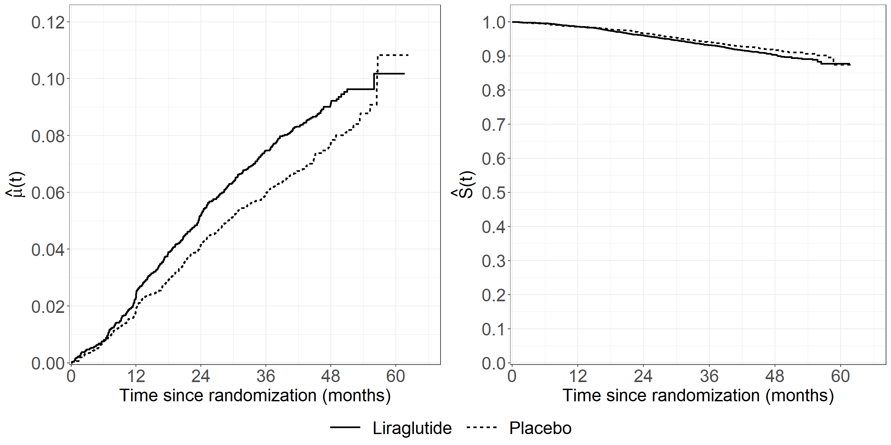

Code show/hide
pbc3 <- read.csv("data/pbc3.csv")
pbc3$fail <- as.numeric(with(pbc3, status > 0))
pbc3$log2bili <- with(pbc3, log2(bili))pbc3 <- read.csv("data/pbc3.csv")
pbc3$fail <- as.numeric(with(pbc3, status > 0))
pbc3$log2bili <- with(pbc3, log2(bili))proc import out=pbc3
datafile="data/pbc3.csv"
dbms=csv replace;
run;
* NB: Inside the macros below a variable called `id` is created which will interfere
with your identification variable if it is also called `id` in your data set,
in which case you will need to rename your `id` variable. We have to do it for pbc3;
data pbc3;
set pbc3;
fail=(status>0);
log2bili=log2(bili);
years=days/365.25;
rename id=ptno;
run;pseudosurvThis SAS macro computes pseudo-values based on Kaplan-Meier estimates and is adapted from that described by:
NB: Inside the macros below a variable called id is created which will interfere with your identification variable if it is also called id in your data set, in which case you will need to rename your id variable. We have to do it for pbc3.
* Can also be found on:
https://biostat.ku.dk/pka/epidata/pseudosurv.sas;
* 'noprint plots = none' are included twice in the proc lifetest statement of the MACRO to avoid none important outputs being printed;
%macro pseudosurv(indata,time,dead,howmany,datatau,outdata);
/* The subsequent SAS code is adapted from that described by J.P.Klein,
M.Gerster, P.K.Andersen, S.Tarima, M.Pohar Perme (2008): "SAS and R
functions to compute pseudo-values for censored data regression"
Comp. Meth. Progr. Biomed., vol. 89,pp. 289-300. */
/* MACRO COMPUTES PSEUDOVALUES BASED ON THE KAPLAN-MEIER ESTIMATOR AT EACH
TIME
INPUTS:
INDATA---INPUT DATA SET
TIME--TIME VARIABLE
DEAD---EVENT INDICATOR (1-EVENT, 0-CENSORED)
HOWMANY---SAMPLE SIZE
DATATAU---SUBSET OF INPUT DATA SET AT WHICH PSEUDO VALUES ARE COMPUTED DATA
SET HAS SINGLE VARIABLE TIME
OUTDATA---OUTPUT DATA SET WHICH CONTAINS PSUK,K=1,...,HOWMANY THE PSEUDO
VALUES AT EACH TIME POINT (Note output data set includes orginal data sorted
by time
*/
proc sort data=&indata;
by &time;
data keep; set &datatau;
find=1;
proc sort data=keep; by time;
data point; set &indata;
time=&time;
keep=1;
data point; merge point keep; by time;
keep time find keep;
data useme; set point;
retain temp -1;
if keep = 1 then temp=time;
tuse=temp;
if find ne 1 then delete;
&time=tuse;
run;
/* WORKING DATA SET THAT INCLUDE A SET OF N INDICATORS WHERE FOR THE KTH INDICATOR
THE EVENT IS MISSING */
data newdat; set &indata;
id+1;
array iobs(&howmany) dead1-dead&howmany;
do j=1 to &howmany;
iobs(j)=&dead;
if j=id then iobs(j)=.;
end;
data out; set newdat;
/* COMPUTE KME FOR FULL SAMPLE */
proc lifetest data=newdat noprint plots = none;
time &TIME*&dead(0);
survival out=sall;
data sall; set sall;
sall=survival;
keep &time sall;
%do ip=1 %to &howmany;
/* COMPUTE KME FOR REDUCED SAMPLE */
proc lifetest data=newdat noprint plots = none;
time &time*dead&ip(0);
survival out=stmp;
data stmp; set stmp;
s&ip=survival;
keep &time s&ip;
/*merge KMEs AND COMPUTE PSEUDOVALUES FOR OBSERVATION IP*/
data pstmp; merge sall stmp; by &time;
retain stemp 1;
if s&ip=. then s&ip=stemp;
stemp=s&ip;
psu&ip=&howmany*sall- (&howmany-1)*s&ip;
data out; merge out pstmp useme ; by &time;
if find ne 1 then delete;
keep &time psu1-psu&ip;
%end;
data out; set out;
retain dup -1;
if &time=dup then delete;
else dup=&time;
jd+1;
data io; set out;
array ps psu1-psu&howmany;
do id=1 to &howmany;
pseudo=ps(id);
time=&time;
output;
end;
keep time id pseudo jd;
proc sort data=io ;
by id;
data a; set &indata;
id+1;
data io; merge a io; by id;
proc sort data=io; by jd;
proc sort data=&datatau;
by time;
data taus; set &datatau ;
jd+1;
tpseudo=time;
keep jd tpseudo;
data &outdata; merge io taus; by jd;
drop jd id &time &dead;
run;
%mend;# General plotting style
library(ggplot2)
theme_general <- theme_bw() +
theme(legend.position = "bottom",
text = element_text(size = 20),
axis.text.x = element_text(size = 20),
axis.text.y = element_text(size = 20))
# Calculate pseudo-observations of the survival function for subjects
# The subjects with id=415 and 458 are selected
# The subjects with id=305 and 325 are selected
library(pseudo)
pseudo_allt <- pseudosurv(pbc3$days, pbc3$fail)
# Re-arrange the data into a long data set
b <- NULL
for(it in 1:length(pseudo_allt$time)){
b <- rbind(b,cbind(pbc3,
pseudo = pseudo_allt$pseudo[,it],
tpseudo = pseudo_allt$time[it],
id = 1:nrow(pbc3)))
}
b <- b[order(b$id),]
pseudo_alltid <- b
# Subset the two subjects
subdat <- subset(pseudo_alltid, id %in% c("305", "325"))
# Collect data for plot
pseudodata <- data.frame(tpseudo = subdat$tpseudo / 365.25,
pseudo = subdat$pseudo,
id = as.factor(subdat$id))
fig6.1 <- ggplot(aes(x = tpseudo, y = pseudo, linetype = id),
data = pseudodata) +
geom_hline(yintercept = c(0, 1), color = "darkgrey", size = 1) +
geom_step(linewidth = 1) +
scale_linetype_manual("Patient number", values = c("dashed", "dotted")) +
xlab("Time since randomization (years)") +
ylab("Pseudo-values") +
scale_x_continuous(expand = expansion(mult = c(0.02, 0.05))) +
scale_y_continuous(expand = expansion(mult = c(0.05, 0.05))) +
theme_general +
theme(legend.position = "none")
fig6.1
theme_general_1 <- theme_bw() +
theme(legend.position = "none",
text = element_text(size = 26),
axis.text.x = element_text(size = 26),
axis.text.y = element_text(size = 26))
# Select the pseudo-observations at times
times <- c(366, 743, 1105)
# At 1 year
pseudo_t1 <- subset(pseudo_alltid, tpseudo == times[1])
# Collect data for plot
pseudodata <- data.frame(tpseudo = pseudo_t1$tpseudo / 365.25,
days = pseudo_t1$days,
pseudo = pseudo_t1$pseudo,
failtype = as.factor(pseudo_t1$fail))
fig6.2 <- ggplot(aes(x = days / 365.25, y = pseudo, shape = failtype),
data = pseudodata) +
geom_point(size = 6) +
scale_shape_manual("Fail", values = c(4, 1)) +
xlab(expression("X"[i]*" (years)")) +
ylab("Pseudo-values") +
scale_x_continuous(expand = expansion(mult = c(0.05, 0.05)),
breaks = seq(0, 6, 1)) +
scale_y_continuous(expand = expansion(mult = c(0.05, 0.05)),
limits = c(-0.9, 1.1)) +
theme_general_1
fig6.2
# At 2 years
pseudo_t2 <- subset(pseudo_alltid, tpseudo == times[2])
# Collect data for plot
pseudodata <- data.frame(tpseudo = pseudo_t2$tpseudo / 365.25,
days = pseudo_t2$days,
pseudo = pseudo_t2$pseudo,
failtype = as.factor(pseudo_t2$fail))
fig6.2b <- ggplot(aes(x = days / 365.25, y = pseudo, shape = failtype),
data = pseudodata) +
geom_point(size = 6) +
scale_shape_manual("Fail", values = c(4, 1)) +
xlab(expression("X"[i]*" (years)")) +
ylab("Pseudo-values") +
scale_x_continuous(expand = expansion(mult = c(0.05, 0.05)),
breaks = seq(0, 6, 1)) +
scale_y_continuous(expand = expansion(mult = c(0.05, 0.05)),
limits = c(-0.9, 1.1)) +
theme_general_1
fig6.2b
# At 3 years
pseudo_t3 <- subset(pseudo_alltid, tpseudo == times[3])
# Collect data for plot
pseudodata <- data.frame(tpseudo = pseudo_t3$tpseudo / 365.25,
days = pseudo_t3$days,
pseudo = pseudo_t3$pseudo,
failtype = as.factor(pseudo_t3$fail))
fig6.2c <- ggplot(aes(x = days/365.25, y = pseudo, shape = failtype),
data = pseudodata) +
geom_point(size = 6) +
scale_shape_manual("Fail", values = c(4, 1)) +
xlab(expression("X"[i]*" (years)")) +
ylab("Pseudo-values") +
scale_x_continuous(expand = expansion(mult = c(0.05, 0.05)),
breaks = seq(0, 6, 1)) +
scale_y_continuous(expand = expansion(mult = c(0.05, 0.05)),
limits = c(-0.9, 1.1)) +
theme_general_1 +
theme(legend.position="none")
fig6.2c
data timepoints;
input time;
datalines;
366
743
1105
;
run;
%pseudosurv(pbc3, days, fail, 349, timepoints, outdata);
data outdata;
set outdata;
fail=(status>0);
run;
proc gplot data=outdata;
where time=366;
plot pseudo*years = fail / haxis=axis1 vaxis=axis2;
axis1 order=0 to 6 by 1 minor=none label=('Years');
axis2 order=-0.9 to 1.1 by 0.1 minor=none label=(a=90 'Pseudo-values');
symbol1 v=x i=none c=black;
symbol2 v=o i=none c=black;
run;
quit;
proc gplot data=outdata;
where time=743;
plot pseudo*years = fail / haxis=axis1 vaxis=axis2;
axis1 order=0 to 6 by 1 minor=none label=('Years');
axis2 order=-0.9 to 1.1 by 0.1 minor=none label=(a=90 'Pseudo-values');
symbol1 v=x i=none c=black;
symbol2 v=o i=none c=black;
run;
quit;
proc gplot data=outdata;
where time=1105;
plot pseudo*years = fail / haxis=axis1 vaxis=axis2;
axis1 order=0 to 6 by 1 minor=none label=('Years');
axis2 order=-0.9 to 1.1 by 0.1 minor=none label=(a=90 'Pseudo-values');
symbol1 v=x i=none c=black;
symbol2 v=o i=none c=black;
run;
quit;# Collect data for plot year=2
pseudodata <- data.frame(tpseudo = pseudo_t2$tpseudo / 365.25,
days = pseudo_t2$days,
pseudo = pseudo_t2$pseudo,
log2bili = pseudo_t2$log2bili,
bili = pseudo_t2$bili,
alb = pseudo_t2$alb,
tment = pseudo_t2$tment,
id = pseudo_t2$id,
failtype = as.factor(pseudo_t2$fail))
bili_loess <- loess(pseudo ~ bili, data = pseudodata, span = 0.8, degree = 1)
pseudodata$loesspred <- predict(bili_loess)
pseudodata$t_loesspred <- with(
pseudodata, ifelse(loesspred > 0 , log(-log(loesspred)), NA)
)
fig6.3left <- ggplot(aes(x = bili, y = pseudo), data = pseudodata) +
geom_point(size = 4, shape = 4) +
geom_line(aes(x = bili, y = loesspred), linewidth = 1) +
xlab("Bilirubin") +
ylab("Pseudo-values") +
scale_x_continuous(expand = expansion(mult = c(0.05, 0.05))) +
scale_y_continuous(expand = expansion(mult = c(0.05, 0.05)),
breaks = seq(-0.4, 1.2, by = 0.2),
limits = c(-0.4, 1.2)) +
theme_general
fig6.3left
fig6.3right <- ggplot(aes(x = bili, y = t_loesspred), data = pseudodata) +
geom_line(size = 1) +
xlab("Bilirubin") +
ylab("log(-log(predicted pseudo-values))") +
scale_x_continuous(expand = expansion(mult = c(0.05, 0.05))) +
scale_y_continuous(expand = expansion(mult = c(0.05, 0.05)),
breaks = seq(-5, 2, by = 1),
limits = c(-5, 2)) +
theme_general
fig6.3right
proc sort data=outdata;
by bili;
run;
* Left plot;
proc gplot data=outdata;
where time=743;
plot pseudo*bili/haxis=axis1 vaxis=axis2;
axis1 order=0 to 500 by 50 minor=none label=('Bilirubin');
axis2 order=-0.4 to 1.2 by 0.2 minor=none label=(a=90 'Pseudo-values');
symbol1 v=x i=sm70; * i=sm70 specifies that a smooth line is fit to data;
run;
quit;
* Right plot;
proc loess data=outdata;
where time=743;
model pseudo=bili/smooth=0.7;
output out=smbili p=smooth;
run;
data smbili;
set smbili;
line=log(-log(smooth));
run;
proc sort data=smbili;
by bili;
run;
proc gplot data=smbili;
plot line*bili/haxis=axis1 vaxis=axis2;
axis1 order=0 to 500 by 50 minor=none label=('Bilirubin');
axis2 order=-5 to 2 by 1 minor=none label=(a=90 'Pseudo-values');
symbol1 v=none i=join;
run;
quit;# Loess for log2 bili
log2bili_loess <- loess(pseudo ~ log2bili, data = pseudodata, span = 0.8, degree = 1)
pseudodata$log2bili_loesspred <- predict(log2bili_loess)
pseudodata$t_log2bili_loesspred <- with(pseudodata,
ifelse(log2bili_loesspred > 0 , log(-log(log2bili_loesspred)), NA))
fig6.4left <- ggplot(aes(x = log2bili, y = pseudo), data = pseudodata) +
geom_point(size = 4, shape = 4) +
geom_line(aes(x = log2bili, y = log2bili_loesspred), linewidth = 1) +
xlab(expression("log" [2] * "(bilirubin)")) +
ylab("Pseudo-values") +
scale_x_continuous(expand = expansion(mult = c(0.05, 0.05)), limits = c(1, 9),
breaks = seq(1, 9, by = 1)) +
scale_y_continuous(expand = expansion(mult = c(0.05, 0.05)), breaks = seq(-0.4, 1.2, by = 0.2),
limits = c(-0.4, 1.2)) +
theme_general
fig6.4left
fig6.4right <- ggplot(aes(x = log2bili, y = t_log2bili_loesspred), data = pseudodata) +
geom_line(linewidth = 1) +
xlab(expression("log" [2] * "(bilirubin)")) +
ylab("log(-log(predicted pseudo-values))") +
scale_x_continuous(expand = expansion(mult = c(0.05, 0.05)), limits = c(1, 9),
breaks = seq(1, 9, by = 1)) +
scale_y_continuous(expand = expansion(mult = c(0.05, 0.05)), breaks = seq(-5, 2, by = 1),
limits = c(-5, 2)) +
theme_general
fig6.4right
* Left plot;
proc gplot data=outdata;
where time=743;
plot pseudo*log2bili/haxis=axis1 vaxis=axis2;
axis1 order=1 to 9 by 1 minor=none label=('log2(bilirubin)');
axis2 order=-0.4 to 1.1 by 0.1 minor=none label=(a=90 'Pseudo-values');
symbol1 v=x i=sm70;* i=sm70 specifies that a smooth line is fit to data;
run;
quit;
* Right plot;
proc loess data=outdata;
where time=743;
model pseudo=log2bili/smooth=0.7;
output out=smlogbili p=smooth;
run;
data smlogbili;
set smlogbili;
line=log(-log(smooth));
run;
proc sort data=smlogbili;
by bili;
run;
proc gplot data=smlogbili;
plot line*log2bili/haxis=axis1 vaxis=axis2;
axis1 order=1 to 9 by 1 minor=none label=('log2(Bilirubin)');
axis2 order=-5 to 2 by 1 minor=none label=(a=90 'Pseudo-values');
symbol1 v=none i=join;
run;
quit;Estimates and SD in the book are from SAS proc genmod.
In R we have at least three ways to estimate:
geese from geepack package for the three time points model the SDs are smaller compared to SASsvyglm from survey package gives comparable SDs to SASeventglm is another option with other issues – see comments in the R codegeese from geepackpackagelibrary(geepack)
# summary function for pseudo-value regression from a geese fit
summgeese<-function(pofit,d=6){
beta<-pofit$beta
SD = sqrt(diag(pofit$vbeta))
round(cbind(
beta = beta,
SD.robust = SD,
exp.beta = exp(beta),
exp.lci = exp(beta-1.96*SD),
exp.uci = exp(beta+1.96*SD),
PVal.N = 2-2*pnorm(abs(beta/SD))),d)
}
# At day 743
# data frame pseudodata countains pseudo-observations day 743
geefit1 <- geese(formula = I(1 - pseudo) ~ tment +alb + log2bili,
data = subset(pseudodata, !is.na(alb)),
id = id,
mean.link = "cloglog")
summgeese(geefit1) beta SD.robust exp.beta exp.lci exp.uci PVal.N
(Intercept) -2.116642 1.326984 0.120435 0.008937 1.622951 0.110695
tment -0.705053 0.369341 0.494082 0.239557 1.019035 0.056269
alb -0.105069 0.034169 0.900263 0.841946 0.962618 0.002105
log2bili 0.835723 0.140429 2.306480 1.751517 3.037282 0.000000# At days 366, 743, 1105
# Select the pseudo-observations at times
times <- c(366, 743, 1105)
pseudo_t1 <- subset(pseudo_alltid, tpseudo == times[1])
pseudo_t2 <- subset(pseudo_alltid, tpseudo == times[2])
pseudo_t3 <- subset(pseudo_alltid, tpseudo == times[3])
pseudo_t <- rbind(pseudo_t1, pseudo_t2, pseudo_t3)
pseudodata_t <- data.frame(tpseudo = pseudo_t$tpseudo,
days = pseudo_t$days,
pseudo = pseudo_t$pseudo,
log2bili = pseudo_t$log2bili,
bili = pseudo_t$bili,
alb = pseudo_t$alb,
tment = pseudo_t$tment,
id = pseudo_t$id,
failtype = as.factor(pseudo_t$fail))
geefit3 <- geese(formula = I(1 - pseudo) ~ tment +alb + log2bili + factor(tpseudo)-1,
data = subset(pseudodata_t, !is.na(alb)),
id = id,
mean.link = "cloglog")
summgeese(geefit3) beta SD.robust exp.beta exp.lci exp.uci PVal.N
tment -0.598536 0.213046 0.549616 0.362002 0.834464 0.004963
alb -0.093907 0.019069 0.910367 0.876970 0.945036 0.000001
log2bili 0.684093 0.071818 1.981972 1.721729 2.281552 0.000000
factor(tpseudo)366 -2.474620 0.829782 0.084195 0.016556 0.428165 0.002861
factor(tpseudo)743 -1.554010 0.810703 0.211399 0.043154 1.035587 0.055255
factor(tpseudo)1105 -1.123233 0.813730 0.325227 0.065997 1.602682 0.167479svyglm from survey packagelibrary(survey)
library(survival) # get bcloglog()
# Thanks to Terry Therneau for this comment:
# It needs one more line to set up compaed to geese, but has 3 advantages:
# 1: naturally deals with missing values in the data
# 2: results follow standard R nomenclature, e.g., the coef and vcov functions work as expected
# 3: geese gives incorrect answers, without warning, if the data set is not sorted in exactly the order it expects
# Also: The bounded cloglog link, bcloglog(), avoid an error message in glm's initial values step. It's found in the survival package.
# summary function for pseudo-value regression from a svyglm fit
summsvy<-function(pofit,d=5){
beta<-pofit$coefficient
SD<-sqrt(diag(pofit$cov.unscaled))
round(cbind(
beta = beta,
SD.robust = SD,
exp.beta = exp(beta),
exp.lci = exp(beta-1.96*SD),
exp.uci = exp(beta+1.96*SD),
PVal.N = 2-2*pnorm(abs(beta/SD))),d)
}
# At days 743
svydata <- svydesign(~id, variables= ~., data=pseudodata, weight= ~1)
svyfit1 <- svyglm(I(1 - pseudo) ~ tment + alb + log2bili,
design=svydata, family= gaussian(link= bcloglog()))
summsvy(svyfit1) beta SD.robust exp.beta exp.lci exp.uci PVal.N
(Intercept) -2.11619 1.32893 0.12049 0.00891 1.62989 0.11129
tment -0.70510 0.36987 0.49406 0.23930 1.02004 0.05660
alb -0.10508 0.03422 0.90026 0.84186 0.96270 0.00213
log2bili 0.83569 0.14064 2.30641 1.75074 3.03845 0.00000# At days 366, 743, 1105
svydata3 <- svydesign(~id, variables= ~., data=pseudodata_t, weight= ~1)
svyfit3 <- svyglm(I(1 - pseudo) ~ tment + alb + log2bili+factor(tpseudo)-1,
design=svydata3, family= gaussian(link= bcloglog()))
summsvy(svyfit3) beta SD.robust exp.beta exp.lci exp.uci PVal.N
tment -0.59853 0.28738 0.54962 0.31292 0.96536 0.03728
alb -0.09391 0.02630 0.91037 0.86462 0.95853 0.00036
log2bili 0.68410 0.09203 1.98198 1.65487 2.37374 0.00000
factor(tpseudo)366 -2.47472 1.14395 0.08419 0.00894 0.79250 0.03052
factor(tpseudo)743 -1.55410 1.12274 0.21138 0.02341 1.90877 0.16629
factor(tpseudo)1105 -1.12332 1.12718 0.32520 0.03570 2.96225 0.31897cumincglm from eventglmpackageNow, using eventglm package. Handling of missing values (here for variable alb) causes some issue, see comment in R code below.
library(eventglm)
# At day 743
# SD differ a bit from from than SAS, geese, and svyglm
egfit1 <- cumincglm(Surv(days, fail) ~ tment + alb + log2bili, time = 743,
data = pbc3, link="cloglog")
summary(egfit1)
Call:
cumincglm(formula = Surv(days, fail) ~ tment + alb + log2bili,
time = 743, link = "cloglog", data = pbc3)
Coefficients:
Estimate Std. Error z value Pr(>|z|)
(Intercept) -2.11633 1.42637 -1.484 0.13788
tment -0.70509 0.38569 -1.828 0.06753 .
alb -0.10507 0.03628 -2.896 0.00378 **
log2bili 0.83570 0.14657 5.702 1.19e-08 ***
---
Signif. codes: 0 '***' 0.001 '**' 0.01 '*' 0.05 '.' 0.1 ' ' 1
(Dispersion parameter for quasi family taken to be 1)
Null deviance: 53.331 on 342 degrees of freedom
Residual deviance: 34.736 on 339 degrees of freedom
(6 observations deleted due to missingness)
AIC: NA
Number of Fisher Scoring iterations: 8# Use of argument subset gives the same
egfit1x <- cumincglm(Surv(days, fail) ~ tment + alb + log2bili, time = 743,
data = pbc3, subset=!is.na(alb), link="cloglog")
summary(egfit1x)
Call:
cumincglm(formula = Surv(days, fail) ~ tment + alb + log2bili,
time = 743, link = "cloglog", data = pbc3, subset = !is.na(alb))
Coefficients:
Estimate Std. Error z value Pr(>|z|)
(Intercept) -2.11633 1.42637 -1.484 0.13788
tment -0.70509 0.38569 -1.828 0.06753 .
alb -0.10507 0.03628 -2.896 0.00378 **
log2bili 0.83570 0.14657 5.702 1.19e-08 ***
---
Signif. codes: 0 '***' 0.001 '**' 0.01 '*' 0.05 '.' 0.1 ' ' 1
(Dispersion parameter for quasi family taken to be 1)
Null deviance: 53.331 on 342 degrees of freedom
Residual deviance: 34.736 on 339 degrees of freedom
AIC: NA
Number of Fisher Scoring iterations: 8# Sub-setting the data is not the way:
# When sub-setting, the pseudo-values are calculated base on the sub-sample,
# which is different from all the above where the full sample is used to
# calculate the pseudo-values
egfit1xx <- cumincglm(Surv(days, fail) ~ tment + alb + log2bili, time = 743,
data = subset(pbc3,!is.na(alb)), link="cloglog")
summary(egfit1xx)
Call:
cumincglm(formula = Surv(days, fail) ~ tment + alb + log2bili,
time = 743, link = "cloglog", data = subset(pbc3, !is.na(alb)))
Coefficients:
Estimate Std. Error z value Pr(>|z|)
(Intercept) -2.11445 1.42986 -1.479 0.13920
tment -0.70619 0.38684 -1.826 0.06792 .
alb -0.10532 0.03642 -2.892 0.00383 **
log2bili 0.83700 0.14731 5.682 1.33e-08 ***
---
Signif. codes: 0 '***' 0.001 '**' 0.01 '*' 0.05 '.' 0.1 ' ' 1
(Dispersion parameter for quasi family taken to be 1)
Null deviance: 53.570 on 342 degrees of freedom
Residual deviance: 34.909 on 339 degrees of freedom
AIC: NA
Number of Fisher Scoring iterations: 8# At days 366, 743, 1105
# For multiple time points we get an error for this code:
# egfit3 <- cumincglm(Surv(days, fail) ~ tment + alb + log2bili, time = c(366, 743, 1105),
# data = pbc3, link="cloglog")
# Error in model.frame.default(formula = formula2i, data = newdatasrt, weights = weights, :
# variable lengths differ (found for '(weights)')
# Try to use argument subset, but get same error
# egfit3x <- cumincglm(Surv(days, fail) ~ tment + alb + log2bili, time = c(366, 743, 1105),
# data = pbc3, subset=!is.na(alb), link="cloglog")
# Have to do sub-setting on data, but this is not the way to do it
# but is in this case VERY close to svyglm results
egfit3xx <- cumincglm(Surv(days, fail) ~ tment + alb + log2bili, time = c(366, 743, 1105),
data = subset(pbc3,!is.na(alb)), link="cloglog")
summary(egfit3xx)
Call:
cumincglm(formula = Surv(days, fail) ~ tment + alb + log2bili,
time = c(366, 743, 1105), link = "cloglog", data = subset(pbc3,
!is.na(alb)))
Coefficients:
Estimate Std. Error z value Pr(>|z|)
(Intercept) -1.11947 1.12726 -0.993 0.320664
factor(pseudo.time)366 -1.35313 0.23361 -5.792 6.94e-09 ***
factor(pseudo.time)743 -0.43081 0.11892 -3.623 0.000292 ***
tment -0.59990 0.28746 -2.087 0.036898 *
alb -0.09416 0.02633 -3.576 0.000349 ***
log2bili 0.68516 0.09219 7.432 1.07e-13 ***
---
Signif. codes: 0 '***' 0.001 '**' 0.01 '*' 0.05 '.' 0.1 ' ' 1
(Dispersion parameter for quasi family taken to be 1)
Null deviance: 169.71 on 1028 degrees of freedom
Residual deviance: 121.65 on 1023 degrees of freedom
AIC: NA
Number of Fisher Scoring iterations: 7# Rename the id variable ;
data pbc3;
set pbc3;
rename id=ptno;
run;
proc sort data=pbc3;
by days;
run;
data timepoints;
input time;
datalines;
366
743
1105
;
run;
%pseudosurv(pbc3, days, fail, 349, timepoints, outdata);
* At day 743 ----------------------------------------------------------------;
proc genmod data=outdata;
where time=743;
class ptno;
fwdlink link=log(-log(_mean_));
invlink ilink=exp(-exp(_xbeta_));
model pseudo=tment alb log2bili / dist=normal noscale;
repeated subject=ptno/corr=ind;
run;
Analysis Of GEE Parameter Estimates
Empirical Standard Error Estimates
Standard 95% Confidence
Parameter Estimate Error Limits Z Pr > |Z|
Intercept -2.1167 1.3270 -4.7175 0.4842 -1.60 0.1107
tment -0.7051 0.3693 -1.4289 0.0188 -1.91 0.0563
alb -0.1051 0.0342 -0.1720 -0.0381 -3.08 0.0021
log2bili 0.8357 0.1404 0.5605 1.1110 5.95 <.0001
* At days 366 , 743, 1105 ----------------------------------------------------;
proc genmod data=outdata;
class ptno time;
fwdlink link=log(-log(_mean_));
invlink ilink=exp(-exp(_xbeta_));
model pseudo=tment alb log2bili time / dist=normal noscale noint;
repeated subject=ptno/corr=ind;
run;
Analysis Of GEE Parameter Estimates
Empirical Standard Error Estimates
Standard 95% Confidence
Parameter Estimate Error Limits Z Pr > |Z|
Intercept 0.0000 0.0000 0.0000 0.0000 . .
tment -0.5985 0.2870 -1.1610 -0.0361 -2.09 0.0370
alb -0.0939 0.0263 -0.1454 -0.0424 -3.58 0.0003
log2bili 0.6841 0.0919 0.5040 0.8642 7.44 <.0001
time 366 -2.4746 1.1423 -4.7135 -0.2357 -2.17 0.0303
time 743 -1.5540 1.1211 -3.7514 0.6434 -1.39 0.1657
time 1105 -1.1232 1.1256 -3.3293 1.0829 -1.00 0.3183# At time year c(1, 2, 3)
fit2 <- geese(formula = I(1 - pseudo) ~ as.factor(tpseudo) + log2bili + alb + tment - 1,
data = subset(pseudodata_t, !is.na(alb)),
id = id,
mean.link = "cloglog",
variance = "gaussian",
scale.value = 0,
scale.fix = 1)
pseudodata_t$pred <- rep(NA, nrow(pseudodata_t))
# At time 1
pseudodata_t[pseudodata_t$tpseudo == times[1] / 365.25,]$pred <-
with(pseudodata_t[pseudodata_t$tpseudo == times[1] / 365.25,],
fit2$beta[1] + fit2$beta[4]*log2bili + fit2$beta[5]*alb + fit2$beta[6]*tment)
# At time 2
pseudodata_t[pseudodata_t$tpseudo == times[2] / 365.25,]$pred <-
with(pseudodata_t[pseudodata_t$tpseudo == times[2] / 365.25,],
fit2$beta[2] + fit2$beta[4]*log2bili + fit2$beta[5]*alb + fit2$beta[6]*tment)
# At time 3
pseudodata_t[pseudodata_t$tpseudo == times[3] / 365.25,]$pred <-
with(pseudodata_t[pseudodata_t$tpseudo == times[3] / 365.25,],
fit2$beta[3] + fit2$beta[4]*log2bili + fit2$beta[5]*alb + fit2$beta[6]*tment)
# Transform back
pseudodata_t$res <- with(pseudodata_t, pseudo - exp(-exp(pred)))
pseudodata_t$time <- as.factor(pseudodata_t$tpseudo * 365.25)
# Make loess smooth per time
log2bili_res_loess_1 <- loess(res ~ log2bili,
data = subset(pseudodata_t, time == 366), span = 0.7, degree = 1)
log2bili_res_loess_2 <- loess(res ~ log2bili,
data = subset(pseudodata_t, time == 743), span = 0.7, degree = 1)
log2bili_res_loess_3 <- loess(res ~ log2bili,
data = subset(pseudodata_t, time == 1105), span = 0.7, degree = 1)
log2bili_res_pred_1 <- predict(log2bili_res_loess_1, newdata = subset(pseudodata_t, time == 366))
log2bili_res_pred_2 <- predict(log2bili_res_loess_2, newdata = subset(pseudodata_t, time == 743))
log2bili_res_pred_3 <- predict(log2bili_res_loess_3, newdata = subset(pseudodata_t, time == 1105))
pseudodata_t$log2bili_res_pred <- c(log2bili_res_pred_1, log2bili_res_pred_2, log2bili_res_pred_3)
fig6.5 <- ggplot(aes(x = log2bili, y = res, shape = time), data = pseudodata_t) +
geom_line(aes(x = log2bili, y = log2bili_res_pred , linetype = time), linewidth = 1) +
geom_point(size = 3) +
scale_shape_manual("Year", values = c(4, 2, 0), labels = c("1", "2", "3")) +
scale_linetype_manual("Year", values = c("dashed", "solid", "dotted"), labels = c("1", "2", "3")) +
xlab(expression("log" [2] * "(bilirubin)")) +
ylab("Pseudo-residuals") +
scale_x_continuous(expand = expansion(mult = c(0.05, 0.05)), limits = c(1, 9),
breaks = seq(1, 9, by = 1)) +
scale_y_continuous(expand = expansion(mult = c(0.05, 0.05)), breaks = seq(-2, 1, by = 1),
limits = c(-2, 1)) +
theme_general +
theme(legend.box = "vertical",
text = element_text(size=20),
legend.key.size = unit(1.5, 'cm'),
legend.text = element_text(size = 20))
fig6.5
data fig6_5; set outdata;
if time=366 then do;
linpred=-2.4746+0.6841*log2bili-0.0939*alb-0.5985*tment;
pred=exp(-exp(linpred)); res=pseudo-pred; end;
if time=743 then do;
linpred=-1.5540+0.6841*log2bili-0.0939*alb-0.5985*tment;
pred=exp(-exp(linpred)); res=pseudo-pred; end;
if time=1105 then do;
linpred=-1.1232+0.6841*log2bili-0.0939*alb-0.5985*tment;
pred=exp(-exp(linpred)); res=pseudo-pred; end;
run;
proc gplot data=fig6_5;
plot res*log2bili=time/haxis=axis1 vaxis=axis2;
axis1 order=1 to 9 by 1 minor=none label=('log2(Bilirubin)');
axis2 order=-2 to 1 by 1 minor=none label=(a=90 'Pseudo-residuals');;
symbol1 v=x i=sm50;
symbol2 v=o i=sm50;
symbol3 v=+ i=sm50;
run;
quit;# At days 366 , 743, 1105 using link function "-log"
# No default link function "-log" R, thus add "-" in front of all beta estimates
summsvy(svyglm(pseudo ~ tment + alb + bili + factor(tpseudo)-1 ,
design=svydata3, family=gaussian(link=blog()))) beta SD.robust exp.beta exp.lci exp.uci PVal.N
tment 0.04839 0.03111 1.04958 0.98748 1.11558 0.11989
alb 0.00969 0.00319 1.00974 1.00344 1.01607 0.00241
bili -0.00419 0.00079 0.99582 0.99427 0.99737 0.00000
factor(tpseudo)366 -0.34027 0.14239 0.71158 0.53830 0.94065 0.01686
factor(tpseudo)743 -0.41202 0.14523 0.66231 0.49824 0.88040 0.00455
factor(tpseudo)1105 -0.50754 0.14699 0.60197 0.45129 0.80296 0.00055* At days 366 , 743, 1105 using link function "-log";
proc genmod data=outdata;
class ptno time;
fwdlink link=-log(_mean_);
invlink ilink=exp(-_xbeta_);
model pseudo=tment alb bili time /dist=normal noscale noint;
repeated subject=ptno / corr=ind;
run;
Analysis Of GEE Parameter Estimates
Empirical Standard Error Estimates
Standard 95% Confidence
Parameter Estimate Error Limits Z Pr > |Z|
Intercept 0.0000 0.0000 0.0000 0.0000 . .
tment -0.0484 0.0311 -0.1093 0.0125 -1.56 0.1194
alb -0.0097 0.0032 -0.0159 -0.0034 -3.04 0.0024
bili 0.0042 0.0008 0.0026 0.0057 5.29 <.0001
time 366 0.3403 0.1422 0.0616 0.6189 2.39 0.0167
time 743 0.4120 0.1450 0.1278 0.6963 2.84 0.0045
time 1105 0.5075 0.1468 0.2199 0.7952 3.46 0.0005# Create Figure 6.6 (a) - done earlier
fig6.6left <- fig6.3left
fig6.6left
# Same as earlier:
bili_loess <- loess(pseudo ~ bili, data = pseudodata, span = 0.8, degree = 1)
pseudodata$loesspred <- predict(bili_loess)
# Use log-trans instead of cloglog
pseudodata$log_loesspred <- with(pseudodata,
ifelse(loesspred > 0 , -log(loesspred), NA))
fig6.6right <- ggplot(aes(x = bili, y = log_loesspred), data = pseudodata) +
geom_line(linewidth = 1) +
xlab("Bilirubin") +
ylab("-log(predicted pseudo-values)") +
scale_x_continuous(expand = expansion(mult = c(0.05, 0.05))) +
scale_y_continuous(expand = expansion(mult = c(0.05, 0.05)), breaks = seq(-1, 3, by = 1),
limits = c(-1, 3)) +
theme_general
fig6.6right
* Right plot;
proc sort data=outdata;
by bili;
run;
proc gplot data=outdata;
where time=743;
plot pseudo*bili/haxis=axis1 vaxis=axis2;
axis1 order=0 to 500 by 50 minor=none label=('Bilirubin');
axis2 order=-0.4 to 1.2 by 0.2 minor=none label=(a=90 'Pseudo-values');
symbol1 v=x i=sm70;
run;
quit;
* Left plot;
proc loess data=outdata;
where time=743;
model pseudo=bili/smooth=0.7;
output out=smbili p=smooth;
run;
data smbili;
set smbili;
line=-log(smooth);
run;
proc sort data=smbili;
by bili;
run;
proc gplot data=smbili;
plot line*bili/haxis=axis1 vaxis=axis2;
axis1 order=0 to 500 by 50 minor=none label=('Bilirubin');
axis2 order=-1 to 3 by 1 minor=none label=(a=90 'Pseudo-values');
symbol1 v=none i=join;
run;
quit;# Use regression estimates from fit2
pseudodata_t$pred <- rep(NA, nrow(pseudodata_t))
# At time 1
pseudodata_t[pseudodata_t$tpseudo == times[1] / 365.25,]$pred <-
with(pseudodata_t[pseudodata_t$tpseudo == times[1] / 365.25,],
fit2$beta[1] + fit2$beta[4]*bili + fit2$beta[5]*alb + fit2$beta[6]*tment)
# At time 2
pseudodata_t[pseudodata_t$tpseudo == times[2] / 365.25,]$pred <-
with(pseudodata_t[pseudodata_t$tpseudo == times[2] / 365.25,],
fit2$beta[2] + fit2$beta[4]*bili + fit2$beta[5]*alb + fit2$beta[6]*tment)
# At time 3
pseudodata_t[pseudodata_t$tpseudo == times[3] / 365.25,]$pred <-
with(pseudodata_t[pseudodata_t$tpseudo == times[3] / 365.25,],
fit2$beta[3] + fit2$beta[4]*bili + fit2$beta[5]*alb + fit2$beta[6]*tment)
# Transform back
pseudodata_t$res <- with(pseudodata_t, pseudo - exp(pred))
pseudodata_t$time <- as.factor(pseudodata_t$tpseudo * 365.25)
# Make loess smooth per time
bili_res_loess_1 <- loess(res ~ bili,
data = subset(pseudodata_t, time == 366),
span = 0.7, degree = 1)
bili_res_loess_2 <- loess(res ~ bili,
data = subset(pseudodata_t, time == 743),
span = 0.7, degree = 1)
bili_res_loess_3 <- loess(res ~ bili,
data = subset(pseudodata_t, time == 1105),
span = 0.7, degree = 1)
bili_res_pred_1 <- predict(bili_res_loess_1,
newdata = subset(pseudodata_t, time == 366))
bili_res_pred_2 <- predict(bili_res_loess_2,
newdata = subset(pseudodata_t, time == 743))
bili_res_pred_3 <- predict(bili_res_loess_3,
newdata = subset(pseudodata_t, time == 1105))
pseudodata_t$bili_res_pred <- c(bili_res_pred_1,
bili_res_pred_2,
bili_res_pred_3)
# Create Figure
fig6.7 <- ggplot(aes(x = bili, y = res, shape = time), data = pseudodata_t) +
geom_line(aes(x = bili, y = bili_res_pred , linetype = time), linewidth = 1) +
geom_point(size = 3) +
scale_shape_manual("Year", values = c(4, 2, 0),
labels = c("1", "2", "3")) +
scale_linetype_manual("Year",
values = c("dashed", "solid", "dotted"),
labels = c("1", "2", "3")) +
xlab(expression("Bilirubin")) +
ylab("Pseudo-residuals") +
scale_x_continuous(expand = expansion(mult = c(0.05, 0.05)),
limits = c(0, 500),
breaks = seq(0, 500, by = 100)) +
scale_y_continuous(expand = expansion(mult = c(0.05, 0.05)),
breaks = seq(-2, 1, by = 1),
limits = c(-2, 1)) +
theme_general +
theme(legend.box = "vertical",
text = element_text(size=20),
legend.key.size = unit(2, 'cm'),
legend.text = element_text(size = 20))
fig6.7
data fig6_7;
set outdata;
if time=366 then do;
linpred2=0.3403+0.0042*bili-0.0097*alb-0.0484*tment;
pred2=exp(-linpred2); res2=pseudo-pred2; end;
if time=743 then do;
linpred2=0.4120+0.0042*bili-0.0097*alb-0.0484*tment;
pred2=exp(-linpred2); res2=pseudo-pred2; end;
if time=1105 then do;
linpred2=0.5075+0.0042*bili-0.0097*alb-0.0484*tment;
pred2=exp(-linpred2); res2=pseudo-pred2; end;
run;
proc gplot data=fig6_7;
plot res2*bili=time/haxis=axis1 vaxis=axis2;
axis1 order=0 to 500 by 100 minor=none label=('Bilirubin');
axis2 order=-2 to 1 by 1 minor=none label=(a=90 'Pseudo-residuals');;
symbol1 v=x i=sm50;
symbol2 v=o i=sm50;
symbol3 v=+ i=sm50;
run;
quit;Here, geese, svyglm, and rmeanglm (from package eventglm) give very similar results.
# Calculate pseudo-observations of the restricted mean and merge with pbc3
datarmean3<-cbind(pbc3,pseudormean=pseudomean(pbc3$days/365.25,pbc3$fail,tmax = 3))
# geese
summgeese(geese(pseudormean ~ tment + alb + log2bili, id = id,
data = subset(datarmean3, !is.na(alb)),
family = "gaussian", mean.link = "identity",
corstr = "independence")) beta SD.robust exp.beta exp.lci exp.uci PVal.N
(Intercept) 2.825598 0.346121 16.871036 8.560865 33.248026 0.000000
tment 0.147813 0.072936 1.159296 1.004870 1.337455 0.042703
alb 0.022512 0.006811 1.022768 1.009204 1.036513 0.000949
log2bili -0.243093 0.031982 0.784199 0.736550 0.834930 0.000000# svyglm
svydata <- svydesign(~id, variables= ~., data=datarmean3, weight= ~1)
summsvy(svyglm(pseudormean ~ tment + alb + log2bili, design=svydata,
family= gaussian(link="identity"))) beta SD.robust exp.beta exp.lci exp.uci PVal.N
(Intercept) 2.82560 0.34662 16.87104 8.55253 33.28043 0.00000
tment 0.14781 0.07304 1.15930 1.00466 1.33773 0.04300
alb 0.02251 0.00682 1.02277 1.00919 1.03653 0.00097
log2bili -0.24309 0.03203 0.78420 0.73648 0.83500 0.00000# rmeanglm from package eventglm
summary(rmeanglm(Surv(days/365.25, fail) ~ tment + alb + log2bili,time = 3,
data = pbc3, link="identity"))
Call:
rmeanglm(formula = Surv(days/365.25, fail) ~ tment + alb + log2bili,
time = 3, link = "identity", data = pbc3)
Coefficients:
Estimate Std. Error z value Pr(>|z|)
(Intercept) 2.825598 0.353204 8.000 1.25e-15 ***
tment 0.147813 0.073915 2.000 0.0455 *
alb 0.022512 0.006951 3.238 0.0012 **
log2bili -0.243093 0.032626 -7.451 9.27e-14 ***
---
Signif. codes: 0 '***' 0.001 '**' 0.01 '*' 0.05 '.' 0.1 ' ' 1
(Dispersion parameter for quasi family taken to be 1)
Null deviance: 213.75 on 342 degrees of freedom
Residual deviance: 152.10 on 339 degrees of freedom
(6 observations deleted due to missingness)
AIC: NA
Number of Fisher Scoring iterations: 2proc rmstregproc rmstreg data=pbc3 tau=3;
model years*status(0)=tment alb log2bili / link=linear;
run;
Analysis of Parameter Estimates
Standard 95% Confidence Chi-
Parameter DF Estimate Error Limits Square Pr > ChiSq
Intercept 1 2.8263 0.3467 2.1469 3.5058 66.47 <.0001
tment 1 0.1480 0.0730 0.0048 0.2911 4.11 0.0427
alb 1 0.0225 0.0068 0.0092 0.0359 10.92 0.0010
log2bili 1 -0.2435 0.0320 -0.3063 -0.1808 57.83 <.0001pseudomeanSAS macro for computing pseudo-values of the restricted mean based on Kaplan-Meier estimates.
NB: Inside the macro a variable called id is created which will interfere with your identification variable is called id in your data set, in which case you will need to rename your id variable.
* Can also be found on:
https://biostat.ku.dk/pka/epidata/pseudomean.sas;
%macro pseudomean(indata,time,dead,howmany,tmax,outdata);
/* MACRO ARGUMENTS
INDATA--NAME OF INPUT DATA SET
TIME--NAME OF TIME VARIABLE
DEAD--NAME OF EVENT INDICATOR VARIABLE--(1-DEAD,0-CENSORED)
HOWMANY--SAMPLE SIZE
TMAX--UPPER LIMIT OF INTEGRATION FOR RESTRICTED MEAN
OUTDATA--NAME OF OUTPUT DATA SET WITH PSEUDOVALUES FPR RESTRICTED
MEAN IN VARIABLE "PSUMEAN" */
/* CREATE A DATA SET WHERE EVERYTHING ABOVE TMAX IS CENSORED */
DATA work; SET &indata;
restime = MIN(&tmax, &time);
resdead = &dead;
IF restime EQ &tmax THEN resdead = 0;
/* CREATE DATA SET WITH SET OF INDICATORS DEADK THAT HAS MISSING VALUE
FOR KTH OBSERVATION, K=1,...,HOWMANY*/
DATA work; SET work;
id+1;
ARRAY iobs(&howmany) dead1-dead&howmany;
DO j = 1 TO &howmany;
iobs(j) = resdead;
IF j = id THEN iobs(j) = .;
END;
/* COMPUTE RESTRICTED MEAN FOR COMPLETE SAMPLE USING PROC LIFETEST */
PROC LIFETEST DATA = work OUTSURV = km ;
TIME restime*resdead(0);
ODS SELECT MEANS;
ODS OUTPUT MEANS = mall;
RUN;
DATA km; SET km;
IF _CENSOR_ EQ 0;
PROC SORT DATA=km;
BY restime;
RUN;
DATA km; SET km END=LAST;
IF NOT(LAST) THEN DELETE;
area = (&tmax - restime)*survival;
KEEP area;
DATA psu; MERGE km mall;
meanall = mean + area;
KEEP meanall;
%DO ip = 1 %TO &howmany;
/* COMPUTE RESTRICTED MEAN FOR SAMPLE WITH IPTH OBSERVATION DELETED
USING PROC LIFETEST */
PROC LIFETEST DATA = work OUTSURV = km1 ;
TIME restime*dead&ip(0);
ODS SELECT means;
ODS OUTPUT MEANS = m1;
RUN;
DATA km1; SET km1;
IF _CENSOR_ EQ 0;
PROC SORT DATA = km1;
BY restime;
RUN;
DATA km1; SET km1 END=LAST;
IF NOT(LAST) THEN DELETE;
area = (&tmax - restime)*survival;
KEEP area;
DATA km1; MERGE km1 m1;
mean = mean + area;
KEEP mean;
/* COMPUTE PSEUDOVALUE FOR IPTH OBSERVATION*/
DATA psu; MERGE psu km1;
psu&ip=&howmany*meanall-(&howmany-1)*mean;
%END;
/* TRANSPOSE DATASET AND MERGE WITH RAW DATA*/
DATA out; SET psu;
ARRAY y(&howmany) psu1-psu&howmany;
DO j = 1 TO &howmany;
psumean=y(j);
OUTPUT;
END;
KEEP psumean;
DATA &outdata; MERGE &indata out;
run;
%MEND;%pseudomean(pbc3,years,fail,349,3,outmean3);
proc genmod data=outmean3;
class ptno;
model psumean = tment alb log2bili /dist=normal;
repeated subject=ptno / corr=ind;
run;
Analysis Of GEE Parameter Estimates
Empirical Standard Error Estimates
Standard 95% Confidence
Parameter Estimate Error Limits Z Pr > |Z|
Intercept 2.8256 0.3461 2.1472 3.5040 8.16 <.0001
tment 0.1478 0.0729 0.0049 0.2908 2.03 0.0427
alb 0.0225 0.0068 0.0092 0.0359 3.31 0.0009
log2bili -0.2431 0.0320 -0.3058 -0.1804 -7.60 <.0001# Collect data for plot
pseudodata <- data.frame(days = outmean3$days,
pseudo = outmean3$pseudo,
failtype = as.factor(outmean3$fail))
fig6.8 <- ggplot(aes(x = days / 365.25, y = pseudo, shape = failtype), data = pseudodata) +
geom_point(size = 6) +
scale_shape_manual("Fail", values = c(4, 1)) +
xlab(expression("X"[i]*" (years)")) +
ylab("Pseudo-values") +
scale_x_continuous(expand = expansion(mult = c(0.05, 0.05)), limits = c(0, 6),
breaks = seq(0, 6, by = 1)) +
scale_y_continuous(expand = expansion(mult = c(0.05, 0.05)), limits = c(0, 4)) +
theme_general +
theme(legend.position="none")
fig6.8
* see %pseudomean(pbc3,years,fail,349,3,outmean3) above for table 6.3;
proc sort data=outmean3;
by years;
run;
proc gplot data=outmean3;
plot psumean*years=fail/haxis=axis1 vaxis=axis2;
axis1 order=0 to 6 by 1 minor=none label=('Years');
axis2 order=0 to 4 by 1 minor=none label=(a=90 'Pseudo-values');
symbol1 v=x i=none c=black;
symbol2 v=o i=none c=black;
run;
quit;# Loess for log2 bili
log2bili_loess <- loess(pseudo ~ log2bili, data = outmean3, span = 0.8, degree = 1)
outmean3$log2bili_loesspred <- predict(log2bili_loess)
#outmean3$t_log2bili_loesspred <- with(outmean3,
# ifelse(log2bili_loesspred > 0 ,
# log(log2bili_loesspred/(1-log2bili_loesspred)), NA))
fig6.9 <- ggplot(aes(x = log2bili, y = pseudo), data = outmean3) +
geom_point(size = 6, shape = 4) +
geom_line(aes(x = log2bili, y = log2bili_loesspred), linewidth = 1) +
xlab(expression("log" [2] * "(bilirubin)")) +
ylab("Pseudo-values") +
scale_x_continuous(expand = expansion(mult = c(0.01, 0.05)), limits = c(1, 9),
breaks = seq(1, 9, by = 1)) +
scale_y_continuous(expand = expansion(mult = c(0.01, 0.05)), breaks = seq(0, 4, by = 1),
limits = c(0, 4)) +
theme_general
fig6.9
proc sort data=outmean3;
by bili;
run;
proc gplot data=outmean3;
plot psumean*log2bili/haxis=axis1 vaxis=axis2;
axis1 order=1 to 9 by 1 minor=none label=('log2(bilirubin)');
axis2 order=0 to 4 by 1 minor=none label=(a=90 'Pseudo-values');
symbol1 v=x i=sm70;
run;
quit;# Calculate pseudo-values based on Aalen-Johansen estimates using pseudoci()
# and merge with pbc3 data
ci2 <- pseudoci(pbc3$days/365.25, pbc3$status,tmax = 2)
dataci2 <- cbind(pbc3,
pseudo.trans = as.vector(ci2$pseudo[[1]]),
pseudo.death = as.vector(ci2$pseudo[[2]]))
# Fit models
geese_logit <- geese(pseudo.death ~ tment , id = id,
data = dataci2,
family = "gaussian", mean.link = "logit",
corstr = "independence", scale.fix = FALSE)
summgeese(geese_logit) beta SD.robust exp.beta exp.lci exp.uci PVal.N
(Intercept) -2.219619 0.266253 0.108651 0.064475 0.183093 0.000000
tment 0.111654 0.369947 1.118126 0.541484 2.308852 0.762796geese_cloglog <- geese(pseudo.death ~ tment, id = id,
data = dataci2,
family = "gaussian", mean.link = "cloglog",
corstr = "independence", scale.fix = FALSE)
summgeese(geese_cloglog) beta SD.robust exp.beta exp.lci exp.uci PVal.N
(Intercept) -2.271634 0.252982 0.103144 0.062820 0.169350 0.000000
tment 0.105795 0.350554 1.111593 0.559175 2.209754 0.762811geese_logit <- geese(pseudo.death ~ tment + alb + log2bili, id = id,
data = subset(dataci2, !is.na(alb)),
family = "gaussian", mean.link = "logit",
corstr = "independence", scale.fix = FALSE)
summgeese(geese_logit) beta SD.robust exp.beta exp.lci exp.uci PVal.N
(Intercept) -0.486188 1.786601 0.614966 0.018538 20.400294 0.785522
tment -0.573544 0.505353 0.563525 0.209290 1.517322 0.256401
alb -0.143586 0.048657 0.866247 0.787452 0.952926 0.003168
log2bili 0.712280 0.187606 2.038634 1.411385 2.944646 0.000147geese_cloglog <- geese(pseudo.death ~ tment + alb + log2bili, id = id,
data = subset(dataci2, !is.na(alb)),
family = "gaussian", mean.link = "cloglog",
corstr = "independence", scale.fix = FALSE)
summgeese(geese_cloglog) beta SD.robust exp.beta exp.lci exp.uci PVal.N
(Intercept) -0.791914 1.499176 0.452977 0.023986 8.554614 0.597338
tment -0.518744 0.424131 0.595268 0.259230 1.366910 0.221301
alb -0.114153 0.037407 0.892122 0.829054 0.959988 0.002276
log2bili 0.569410 0.145153 1.767224 1.329642 2.348815 0.000088svydata <- svydesign(~id, variables= ~., data=dataci2, weight= ~1)
svyfit_logit <- svyglm(pseudo.death ~ tment,
design=svydata, family= gaussian(link=blogit()))
summsvy(svyfit_logit) beta SD.robust exp.beta exp.lci exp.uci PVal.N
(Intercept) -2.21962 0.26663 0.10865 0.06443 0.18323 0.00000
tment 0.11165 0.37048 1.11813 0.54092 2.31126 0.76313svyfit_cloglog <- svyglm(pseudo.death ~ tment,
design=svydata, family= gaussian(link=bcloglog()))
summsvy(svyfit_cloglog) beta SD.robust exp.beta exp.lci exp.uci PVal.N
(Intercept) -2.27163 0.25334 0.10314 0.06278 0.16947 0.00000
tment 0.10579 0.35106 1.11159 0.55862 2.21194 0.76314svyfit_logit <- svyglm(pseudo.death ~ tment + alb + log2bili,
design=svydata, family= gaussian(link=blogit()))
summsvy(svyfit_logit) beta SD.robust exp.beta exp.lci exp.uci PVal.N
(Intercept) -0.48606 1.78915 0.61505 0.01845 20.50513 0.78588
tment -0.57356 0.50607 0.56352 0.20899 1.51943 0.25706
alb -0.14359 0.04873 0.86624 0.78734 0.95305 0.00321
log2bili 0.71227 0.18787 2.03862 1.41064 2.94616 0.00015svyfit_cloglog <- svyglm(pseudo.death ~ tment + alb + log2bili,
design=svydata, family= gaussian(link=bcloglog()))
summsvy(svyfit_cloglog) beta SD.robust exp.beta exp.lci exp.uci PVal.N
(Intercept) -0.79221 1.50134 0.45284 0.02388 8.58844 0.59773
tment -0.51873 0.42475 0.59528 0.25892 1.36860 0.22199
alb -0.11415 0.03746 0.89213 0.82897 0.96010 0.00231
log2bili 0.56942 0.14536 1.76724 1.32910 2.34980 0.00009pseudociTo use the macro pseudoci we need the following John Klein’s cuminc macro:
%macro cuminc(datain,x,re,de,dataout,cir,cid);
/* THIS MACRO COMPUTES THE CUMULATIVE INCIDENCE FUNCTIONS FOR
BOTH COMPETING RISKS USING PROC PHREG OUTPUT
INPUTS TO MACRO
DATAIN--NAME OF INPUT DATA SET CONTAINING
X--TIME TO EVENT
RE--INDICATOR OF FIRST COMPETING RISK (1-YES, 0-NO)
DE--INDICATOR OF SECOND COMPETING RISK
DATAOUT--NAME OF OUTPUT DATA SET CONTAINING
CIR--CUMULATIVE INCIDENCE FUNCTION FOR 1ST COMPETING RISK
CID--CUMULATIVE INCIDENCE FUNCTION FOR 2ST COMPETING RISK
*/
data work; set &datain;
t=&x;
r=&re;
d=&de;
zero=0;
/* COMPUTE CRUDE CUMUALTIVE HAZARD FOR FIRST COMPETING RISK */
proc phreg data=work noprint;
model t*r(0)=zero;
output out=rel logsurv=chr /method=emp;
/* COMPUTE CRUDE CUMUALTIVE HAZARD FOR SECOND COMPETING RISK */
proc phreg data=work noprint;
model t*d(0)=zero;
output out=dead logsurv=chd /method=emp;
/* COMPUTE cumualtive incidence */
data both; merge rel dead; by t;
retain s 1
retain cr 0;
retain cd 0;
retain cumincr 0;
retain cumincd 0;
hr=-(cr+chr);
hd=-(cd+chd);
/* NOTE HR AND HD ARE THE JUMPS IN THE CUMUALTIVE CRUDE HAZARDS AT THIS TIME */
cr=-chr;
cd=-chd;
cir=cumincr+hr*s;
cumincr=cir;
cid=cumincd+hd*s;
cumincd=cid;
s=s*(1-hr-hd);
/* NOTE S IS KAPLAN-MEIER ESTIMATE IGNORING CAUSE OF FAILURE */
data &dataout; set both;
&x=t;
&cir=cir; &cid=cid;
keep &x &cir &cid;
run;
%mend;And now the pseudocimacro:
%macro pseudoci(datain,x,r,d,howmany,datatau,dataout);
/* MACRO COMPUTES PSEUDOVALUES BASED ON THE CUMUALTIVE INCIDENCE FUNCTION
FOR BOTH OF TWO COMPETING RISKS
TIME
INPUTS:
DATAIN---INPUT DATA SET
X--TIME VARIABLE
R--INDICATOR OF FIRST COMPETING RISK (1-YES, 0-NO)
D--INDICATOR OF SECOND COMPETING RISK
HOWMANY---SAMPLE SIZE
DATATAU---SUBSET OF INPUT DATA SET AT WHICH PSEUDO VALUES ARE COMPUTED
DATA SET HAS SINGLE VARIABLE "TIME"
DATAOUT---OUTPUT DATA SET WHICH CONATINS PSUK,K=1,...,HOWMANY THE PSEUDO
VALUES AT EACH TIME POINT (Note output data set
includes orginal data sorted by time)
*/
proc sort data=&datain; by &x;
data keep; set &datatau;
find=1;
proc sort data=keep; by time;
data point; set &datain;
time=&x;
keep=1;
data point; merge point keep; by time;
keep time find keep;
data useme; set point;
retain temp -1;
if keep = 1 then temp=time;
tuse=temp;
if find ne 1 then delete;
&x=tuse;
proc print;
/* PREPARE DATA SET WITH MISSING VALUES FOR DEADK AND RELAPSEK TO BE USED IN COMPUTING
ESTIMATED CUMULATIVE INCIDENCE WITH KTH OBSERVATION DELETED*/
proc sort data=&datain;
by &x;
data newdat; set &datain ;
id+1;
array iobsd(&howmany) dead1-dead&howmany;
array iobsr(&howmany) relapse1-relapse&howmany;
do j=1 to &howmany;
iobsd(j)=&d;
iobsr(j)=&r;
if j=id then do; iobsr(j)=.; iobsd(j)=.; end;
end;
data out; set newdat;
drop dead1-dead&howmany relapse1-relapse&howmany;
/* COMPUTE CI FOR 1ST (CIRALL) AND 2ND (CIDALL) FOR FULL SAMPLE, STORE IN SALL*/
%cuminc(newdat,&x,&r,&d,sall,cirall,cidall);
%do ip=1 %to &howmany;
/* COMPUTE CI FOR 1ST (CIRALL) AND 2ND (CIDALL) FOR REDUCED SAMPLE, STORE IN SIP*/
%cuminc(newdat,&x,relapse&ip,dead&ip,stemp,cir1,cid1);
/* COMPUTE PSEUDOVALUES FOR BOTH RISK AT EVERY DATA POINT AND ADD TO FILE */
data ps; merge sall stemp; by &x;
retain cirtemp 0;
retain cidtemp 0;
if cir1=. then cir1=cirtemp;
cirtemp=cir1;
rpsu&ip=&howmany*cirall- (&howmany-1)*cir1;
if cid1=. then cid1=cidtemp;
cidtemp=cid1;
dpsu&ip=&howmany*cidall- (&howmany-1)*cid1;
data out; merge out ps useme; by &x;
if find ne 1 then delete;
keep time rpsu1-rpsu&ip dpsu1-dpsu&ip &x;
run;
%end;
data &dataout; set newdat;
drop dead1-dead&howmany relapse1-relapse&howmany;
data all; set out;
array yr(&howmany) rpsu1-rpsu&howmany;
array yd(&howmany) dpsu1-dpsu&howmany;
do j=1 to &howmany;
rpseudo=yr(j);
dpseudo=yd(j);
id=j;
output;
end;
keep id time rpseudo dpseudo;
proc sort data=all; by id;
data &dataout; merge &dataout all;
by id;
retain otime -1;
retain oid -1;
if id eq oid and otime=time then delete;
else do; oid=id; otime=time; end;
run;
%mend;* NB: Inside the macros below a variable called `id` is created which will interfere
with your identification variable is called `id` in your data set,
in which case you will need to rename your `id` variable;
* create indicator variables for each competing risk as required by the macro;
proc import out=pbc3
datafile="data/pbc3.csv"
dbms=csv replace;
run;
data pbc3;
set pbc3;
log2bili=log2(bili);
years=days/365.25;
trans=status=1;
death=status=2;
rename id=ptno;
run;
data timepoint;
input time;
datalines;
2
;
run;
%pseudoci(pbc3,years,trans,death,349,timepoint,cumincpv1);
* rpseudo: transplant;
* dpseudo: death;
* logit link function;
proc genmod data=cumincpv1;
class ptno;
model dpseudo = tment / dist=normal noscale link=logit;
repeated subject=ptno / corr=ind;
run;
proc genmod data=cumincpv1;
class ptno;
model dpseudo = tment alb log2bili / dist=normal noscale link=logit;
repeated subject=ptno / corr=ind;
run;
* cloglog link function;
proc genmod data=cumincpv1;
class ptno;
fwdlink link = log(-log(1-_mean_));
invlink ilink = 1 - exp(-exp(_xbeta_));
model dpseudo = tment / dist=normal noscale ;
repeated subject=ptno / corr=ind;
run;
proc genmod data=cumincpv1;
class ptno;
fwdlink link = log(-log(1-_mean_));
invlink ilink = 1 - exp(-exp(_xbeta_));
model dpseudo = tment alb log2bili / dist=normal noscale ;
repeated subject=ptno / corr=ind;
run;#calculate the pseudo-observations
pseudo <- pseudoci(time=pbc3$days/365.25,event=pbc3$status,tmax=c(1,2,3))
#rearrange the data into a long data set, use only pseudo-observations for death,
# i.e., status=2: pseudo$pseudo[[2]],
b <- NULL
for(it in 1:length(pseudo$time)){
b <- rbind(b,cbind(pbc3,death.pseudo = pseudo$pseudo[[2]][,it],
tpseudo = pseudo$time[it],idno=1:nrow(pbc3)))
}
dataci3 <- b[order(b$idno),]
# geese
summgeese(geese(death.pseudo ~ tment + alb + log2bili + factor(tpseudo),
data = subset(dataci3,!is.na(alb)), id=idno,
family=gaussian, mean.link = "cloglog", corstr="independence")) beta SD.robust exp.beta exp.lci exp.uci PVal.N
(Intercept) -0.261582 1.344886 0.769832 0.055158 10.744500 0.845783
tment -0.509819 0.348199 0.600604 0.303525 1.188452 0.143150
alb -0.106465 0.031640 0.899006 0.844949 0.956522 0.000766
log2bili 0.517712 0.116717 1.678183 1.335020 2.109555 0.000009
factor(tpseudo)1 -1.090629 0.225800 0.336005 0.215845 0.523059 0.000001
factor(tpseudo)2 -0.451689 0.132065 0.636552 0.491380 0.824613 0.000626# svyglm
svydata3 <- svydesign(~idno, variables= ~., data=dataci3, weight= ~1)
summsvy(svyglm(death.pseudo ~ tment + alb + log2bili+factor(tpseudo)-1,
design=svydata3, family= gaussian(link= bcloglog()))) beta SD.robust exp.beta exp.lci exp.uci PVal.N
tment -0.50982 0.34870 0.60061 0.30323 1.18962 0.14373
alb -0.10646 0.03168 0.89901 0.84488 0.95661 0.00078
log2bili 0.51771 0.11688 1.67818 1.33458 2.11024 0.00001
factor(tpseudo)1 -1.35232 1.31432 0.25864 0.01968 3.39993 0.30352
factor(tpseudo)2 -0.71337 1.33521 0.48999 0.03578 6.71032 0.59315
factor(tpseudo)3 -0.26168 1.34680 0.76976 0.05495 10.78386 0.84595data timepoints;
input time;
datalines;
1
2
3
;
run;
%pseudoci(pbc3,years,trans,death,349,timepoints,cumincpv3);
* cloglog link function - year 1,2,3;
proc genmod data=cumincpv3;
class ptno time;
fwdlink link = log(-log(1-_mean_));
invlink ilink = 1 - exp(-exp(_xbeta_));
model dpseudo = tment alb log2bili time / dist=normal noscale ;
repeated subject=ptno / corr=ind;
run;# Calculate pseudo-values based on Aalen-Johansen estimates using pseudoci()
# and merge with pbc3 data
pseudo <- pseudoci(time=pbc3$days/365.25,event=pbc3$status,tmax=1:3)
# rearrange the data into a long data set, use only pseudo-observations for death,
# i.e., status=2: pseudo$pseudo[[2]],
b <- NULL
for(it in 1:length(pseudo$time)){
b <- rbind(b,cbind(pbc3,death.pseudo = pseudo$pseudo[[2]][,it],
tpseudo = pseudo$time[it],idno=1:nrow(pbc3)))
}
dataci3 <- b[order(b$idno),]
# geese
summgeese(geese(death.pseudo~tment+alb+log2bili+sex+age+factor(tpseudo),
data = subset(dataci3,!is.na(alb)),id=idno,
family=gaussian, mean.link = "cloglog", corstr="independence")) beta SD.robust exp.beta exp.lci exp.uci PVal.N
(Intercept) -6.406249 2.217556 0.001651 0.000021 0.127475 0.003866
tment -0.271673 0.336437 0.762103 0.394124 1.473650 0.419378
alb -0.075997 0.033083 0.926819 0.868627 0.988908 0.021611
log2bili 0.665681 0.120499 1.945816 1.536495 2.464179 0.000000
sex 0.501740 0.399031 1.651593 0.755512 3.610478 0.208609
age 0.073409 0.022257 1.076170 1.030232 1.124156 0.000973
factor(tpseudo)1 -1.250392 0.277938 0.286393 0.166103 0.493796 0.000007
factor(tpseudo)2 -0.559604 0.172916 0.571435 0.407172 0.801966 0.001211# svyglm
svydata3 <- svydesign(~idno, variables= ~., data=dataci3, weight= ~1)
summsvy(svyglm(death.pseudo ~ tment+alb+log2bili+sex+age+factor(tpseudo)-1,
design=svydata3, family= gaussian(link= bcloglog()))) beta SD.robust exp.beta exp.lci exp.uci PVal.N
tment -0.27168 0.33691 0.76210 0.39375 1.47501 0.42002
alb -0.07600 0.03313 0.92682 0.86855 0.98900 0.02180
log2bili 0.66567 0.12067 1.94580 1.53598 2.46496 0.00000
sex 0.50177 0.39960 1.65164 0.75469 3.61464 0.20924
age 0.07341 0.02229 1.07617 1.03017 1.12422 0.00099
factor(tpseudo)1 -7.65653 2.21309 0.00047 0.00001 0.03619 0.00054
factor(tpseudo)2 -6.96572 2.23153 0.00094 0.00001 0.07488 0.00180
factor(tpseudo)3 -6.40610 2.22068 0.00165 0.00002 0.12828 0.00392# Calculate pseudo-values based on Aalen-Johansen estimates using pseudoci()
# and merge with pbc3 data
pseudo <- pseudoci(time=pbc3$days/365.25,event=pbc3$status,tmax=seq(0.5,5,0.5))
# rearrange the data into a long data set, use only pseudo-observations for death,
# i.e., status=2: pseudo$pseudo[[2]],
b <- NULL
for(it in 1:length(pseudo$time)){
b <- rbind(b,cbind(pbc3,death.pseudo = pseudo$pseudo[[2]][,it],
tpseudo = pseudo$time[it],idno=1:nrow(pbc3)))
}
dataci10 <- b[order(b$idno),]
# geese
summgeese(geese(death.pseudo~tment+alb+log2bili+sex+age+factor(tpseudo),
data = subset(dataci10,!is.na(alb)),id=idno,
family=gaussian, mean.link = "cloglog", corstr="independence")) beta SD.robust exp.beta exp.lci exp.uci PVal.N
(Intercept) -8.317791 2.280980 0.000244 0.000003 0.021342 0.000266
tment -0.407879 0.317456 0.665059 0.356973 1.239038 0.198850
alb -0.037795 0.032187 0.962910 0.904040 1.025614 0.240298
log2bili 0.668563 0.118147 1.951432 1.548047 2.459928 0.000000
sex 0.851497 0.388020 2.343153 1.095245 5.012911 0.028202
age 0.096334 0.022090 1.101127 1.054470 1.149849 0.000013
factor(tpseudo)0.5 -3.837984 0.855628 0.021537 0.004026 0.115215 0.000007
factor(tpseudo)1 -2.060869 0.379676 0.127343 0.060505 0.268017 0.000000
factor(tpseudo)1.5 -1.598225 0.315035 0.202255 0.109078 0.375027 0.000000
factor(tpseudo)2 -1.371611 0.289547 0.253698 0.143830 0.447491 0.000002
factor(tpseudo)2.5 -1.158939 0.268789 0.313819 0.185303 0.531467 0.000016
factor(tpseudo)3 -0.706484 0.221593 0.493376 0.319561 0.761731 0.001432
factor(tpseudo)3.5 -0.497828 0.200511 0.607849 0.410315 0.900480 0.013035
factor(tpseudo)4 -0.201936 0.146273 0.817147 0.613466 1.088454 0.167419
factor(tpseudo)4.5 -0.205112 0.147055 0.814556 0.610584 1.086667 0.163077# svyglm
svydata10 <- svydesign(~idno, variables= ~., data=dataci10, weight= ~1)
summsvy(svyglm(death.pseudo ~ tment+alb+log2bili+sex+age+factor(tpseudo)-1,
design=svydata10, family= gaussian(link=bcloglog()))) beta SD.robust exp.beta exp.lci exp.uci PVal.N
tment -0.40782 0.31790 0.66510 0.35668 1.24019 0.19954
alb -0.03780 0.03223 0.96290 0.90396 1.02569 0.24084
log2bili 0.66853 0.11831 1.95137 1.54752 2.46062 0.00000
sex 0.85135 0.38856 2.34281 1.09392 5.01751 0.02845
age 0.09633 0.02212 1.10112 1.05440 1.14991 0.00001
factor(tpseudo)0.5 -12.15365 2.63773 0.00001 0.00000 0.00093 0.00000
factor(tpseudo)1 -10.37780 2.38032 0.00003 0.00000 0.00330 0.00001
factor(tpseudo)1.5 -9.91517 2.36244 0.00005 0.00000 0.00507 0.00003
factor(tpseudo)2 -9.68856 2.36301 0.00006 0.00000 0.00636 0.00004
factor(tpseudo)2.5 -9.47592 2.34952 0.00008 0.00000 0.00767 0.00006
factor(tpseudo)3 -9.02351 2.31359 0.00012 0.00000 0.01123 0.00010
factor(tpseudo)3.5 -8.81484 2.31331 0.00015 0.00000 0.01383 0.00014
factor(tpseudo)4 -8.51899 2.28551 0.00020 0.00000 0.01761 0.00019
factor(tpseudo)4.5 -8.52217 2.28615 0.00020 0.00000 0.01757 0.00019
factor(tpseudo)5 -8.31701 2.28395 0.00024 0.00000 0.02148 0.00027* cloglog link function - 3 time points;
proc genmod data=cumincpv3;
class ptno time;
fwdlink link = log(-log(1-_mean_));
invlink ilink = 1 - exp(-exp(_xbeta_));
model dpseudo = tment alb log2bili sex age time / dist=normal noscale ;
repeated subject=ptno / corr=ind;
run;
Analysis Of GEE Parameter Estimates
Empirical Standard Error Estimates
Standard 95% Confidence
Parameter Estimate Error Limits Z Pr > |Z|
Intercept -6.4063 2.2176 -10.7526 -2.0599 -2.89 0.0039
tment -0.2717 0.3364 -0.9311 0.3877 -0.81 0.4194
alb -0.0760 0.0331 -0.1408 -0.0112 -2.30 0.0216
log2bili 0.6657 0.1205 0.4295 0.9019 5.52 <.0001
sex 0.5017 0.3990 -0.2803 1.2838 1.26 0.2086
age 0.0734 0.0223 0.0298 0.1170 3.30 0.0010
time 1 -1.2504 0.2779 -1.7951 -0.7056 -4.50 <.0001
time 2 -0.5596 0.1729 -0.8985 -0.2207 -3.24 0.0012
time 3 0.0000 0.0000 0.0000 0.0000 . .Initial values from R used to make proc genmod converge.
* cloglog link function - 10 time points;
data time10points;
input time;
datalines;
.5
1
1.5
2
2.5
3
3.5
4
4.5
5
;
run;
%pseudoci(pbc3,years,trans,death,349,time10points,cumincpv10);
proc genmod data=cumincpv10;
class ptno time(ref="5");
fwdlink link = log(-log(1-_mean_));
invlink ilink = 1 - exp(-exp(_xbeta_));
model dpseudo = tment alb log2bili sex age time / dist=normal noscale
intercept=-8.3
initial=
-0.4
-0.04
0.6
0.8
0.09
-3.8
-2.0
-1.5
-1.3
-1.1
-0.7
-0.4
-0.2
-0.2
;
repeated subject=ptno / corr=ind;
run;
Analysis Of GEE Parameter Estimates
Empirical Standard Error Estimates
Standard 95% Confidence
Parameter Estimate Error Limits Z Pr > |Z|
Intercept -8.3178 2.2810 -12.7885 -3.8472 -3.65 0.0003
tment -0.4079 0.3175 -1.0301 0.2143 -1.28 0.1988
alb -0.0378 0.0322 -0.1009 0.0253 -1.17 0.2403
log2bili 0.6686 0.1181 0.4370 0.9001 5.66 <.0001
sex 0.8515 0.3880 0.0910 1.6120 2.19 0.0282
age 0.0963 0.0221 0.0530 0.1396 4.36 <.0001
time 0.5 -3.8381 0.8557 -5.5151 -2.1610 -4.49 <.0001
time 1 -2.0609 0.3797 -2.8050 -1.3167 -5.43 <.0001
time 1.5 -1.5982 0.3150 -2.2157 -0.9808 -5.07 <.0001
time 2 -1.3716 0.2895 -1.9391 -0.8041 -4.74 <.0001
time 2.5 -1.1589 0.2688 -1.6858 -0.6321 -4.31 <.0001
time 3 -0.7065 0.2216 -1.1408 -0.2722 -3.19 0.0014
time 3.5 -0.4978 0.2005 -0.8908 -0.1048 -2.48 0.0130
time 4 -0.2019 0.1463 -0.4886 0.0848 -1.38 0.1674
time 4.5 -0.2051 0.1471 -0.4933 0.0831 -1.39 0.1631
time 5 0.0000 0.0000 0.0000 0.0000 . .# Lost years
pseudolost <- pseudoyl(time = pbc3$days / 365.25,
event = as.integer(pbc3$status),
tmax = 3)
trans <- cbind(pbc3,pseudo = pseudolost$pseudo[[1]],idno=1:nrow(pbc3))
death <- cbind(pbc3,pseudo = pseudolost$pseudo[[2]],idno=1:nrow(pbc3))
svytrans <- svydesign(~idno, variables= ~., data=trans, weight= ~1)
svydeath <- svydesign(~idno, variables= ~., data=death, weight= ~1)
# Transplantation
summgeese(geese(pseudo ~ tment,data = trans,id = idno,
family = gaussian, corstr = "independence")) beta SD.robust exp.beta exp.lci exp.uci PVal.N
(Intercept) 0.143046 0.041216 1.153782 1.064242 1.250857 0.000519
tment -0.056386 0.051029 0.945174 0.855214 1.044598 0.269173summsvy(svyglm(pseudo ~ tment, design=svytrans, family=gaussian)) beta SD.robust exp.beta exp.lci exp.uci PVal.N
(Intercept) 0.14305 0.04128 1.15378 1.06412 1.25100 0.00053
tment -0.05639 0.05110 0.94517 0.85509 1.04475 0.26986summgeese(geese(pseudo ~ tment + alb + log2(bili),
data = subset(trans,!is.na(alb)), id = idno,
family = gaussian, corstr = "independence")) beta SD.robust exp.beta exp.lci exp.uci PVal.N
(Intercept) -0.292596 0.214510 0.746324 0.490154 1.136375 0.172561
tment -0.062970 0.045824 0.938971 0.858313 1.027209 0.169389
alb -0.000748 0.004088 0.999252 0.991278 1.007291 0.854839
log2(bili) 0.100151 0.026282 1.105338 1.049842 1.163768 0.000139summsvy(svyglm(pseudo ~ tment+alb+log2bili,design=svytrans,family= gaussian)) beta SD.robust exp.beta exp.lci exp.uci PVal.N
(Intercept) -0.29260 0.21482 0.74632 0.48986 1.13706 0.17318
tment -0.06297 0.04589 0.93897 0.85820 1.02734 0.17000
alb -0.00075 0.00409 0.99925 0.99127 1.00730 0.85504
log2bili 0.10015 0.02632 1.10534 1.04976 1.16385 0.00014# Death without transplantation
summgeese(geese(pseudo ~ tment, data = death, id = idno,
family = gaussian, corstr = "independence")) beta SD.robust exp.beta exp.lci exp.uci PVal.N
(Intercept) 0.251531 0.053156 1.285992 1.158753 1.427203 0.000002
tment -0.015210 0.072919 0.984905 0.853737 1.136225 0.834771summsvy(svyglm(pseudo ~ tment, design=svydeath, family=gaussian)) beta SD.robust exp.beta exp.lci exp.uci PVal.N
(Intercept) 0.25153 0.05323 1.28599 1.15858 1.42742 0.000
tment -0.01521 0.07302 0.98491 0.85356 1.13646 0.835summgeese(geese(pseudo ~ tment + alb + log2(bili),
data = subset(death,!is.na(alb)), id = idno,
family = gaussian, corstr = "independence")) beta SD.robust exp.beta exp.lci exp.uci PVal.N
(Intercept) 0.466997 0.323932 1.595197 0.845430 3.009892 0.149401
tment -0.084843 0.068542 0.918657 0.803173 1.050746 0.215784
alb -0.021764 0.006549 0.978471 0.965991 0.991112 0.000890
log2(bili) 0.142942 0.032317 1.153663 1.082855 1.229100 0.000010summsvy(svyglm(pseudo ~ tment+alb+log2bili,design=svydeath,family= gaussian)) beta SD.robust exp.beta exp.lci exp.uci PVal.N
(Intercept) 0.46700 0.32440 1.59520 0.84466 3.01264 0.14998
tment -0.08484 0.06864 0.91866 0.80302 1.05095 0.21644
alb -0.02176 0.00656 0.97847 0.96597 0.99113 0.00091
log2bili 0.14294 0.03236 1.15366 1.08276 1.22921 0.00001# comp. end point t=2 smlg med IJ
library(pseudo)
library(survival)
pbc3$nystatus<-ifelse(pbc3$status > 0, 1, 0)
pseudo <- pseudosurv(time = pbc3$days,
event = pbc3$nystatus,
tmax=2 * 365.25)
fit <- survfit(Surv(days, status > 0) ~ 1, data = pbc3)
IJpseudo <- pseudo(fit, times = 2 * 365.25, addNA = TRUE, data.frame = TRUE, minus1 = TRUE)
pdata <- data.frame(IJpseudo = IJpseudo$pseudo,
pseudo = pseudo$pseudo,
diff = IJpseudo$pseudo - pseudo$pseudo)
fig6.11left <- ggplot(aes(x = pseudo, y = IJpseudo), data = pdata) +
geom_point(size = 4, shape = 1) +
geom_line(size = 1) +
ylab("IJ pseudo-value") +
xlab("Pseudo-value") +
scale_x_continuous(limits = c(-0.2, 1),
breaks = seq(-0.2, 1, by = 0.2)) +
scale_y_continuous(limits = c(-0.2, 1),
breaks = seq(-0.2, 1, by = 0.2)) +
theme_general
fig6.11left
fig6.11right <- ggplot(aes(x = pseudo, y = IJpseudo - pseudo), data = pdata) +
geom_point(size = 4, shape = 1) +
ylab("Difference") +
xlab("Pseudo-value") +
scale_x_continuous(limits = c(-0.2, 1),
breaks = seq(-0.2, 1, by = 0.2)) +
scale_y_continuous(limits = c(-0.01, 0.01),
breaks = seq(-0.01, 0.01, by = 0.005)) +
theme_general
fig6.11right
Only R code available.
prova <- read.csv("data/prova.csv", na.strings = c("."))
library(tidyverse)
prova <- prova %>% mutate(timebleed = ifelse(bleed == 1, timebleed, timedeath),
outof0 = ifelse(bleed ==1, 1, death),
wait = ifelse(bleed ==1, timedeath - timebleed, NA))
library(mstate) # LMAJ
# transition matrix for irreversible illness-death model
tmat <- trans.illdeath(names = c("Non-bleeding", "Bleeding", "Dead"))
long_format_scle0 <- msprep(time = c(NA, "timebleed", "timedeath"),
status = c(NA, "bleed", "death"),
data = subset(as.data.frame(prova), scle ==0),
trans = tmat, keep = "scle")
long_format_scle1 <- msprep(time = c(NA, "timebleed", "timedeath"),
status = c(NA, "bleed", "death"),
data = subset(as.data.frame(prova), scle ==1),
trans = tmat, keep = "scle")
# Estimation of transition probabilities with the Landmark Aalen-Johansen estimator
# Warning is not related to the estimate of pstate2
LMAaJ_scle0 <- LMAJ(long_format_scle0, s = 365.25, from = 1) #P(V(t) = 1 | V(1) = 0)
LMAaJ_scle1 <- LMAJ(long_format_scle1, s = 365.25, from = 1) #P(V(t) = 1 | V(1) = 0)
LMAJ_scle0_data <- as.data.frame(cbind(LMAaJ_scle0$time,LMAaJ_scle0$pstate2, "No"))
colnames(LMAJ_scle0_data) <- c("time", "p01", "Sclerotherapy")
LMAJ_scle1_data <- as.data.frame(cbind(LMAaJ_scle1$time, LMAaJ_scle1$pstate2, "Yes"))
colnames(LMAJ_scle1_data) <- c("time", "p01", "Sclerotherapy")
LMAJ_scle <- as.data.frame(rbind(LMAJ_scle0_data, LMAJ_scle1_data))
library(ggplot2)
theme_general <- theme_bw() +
theme(legend.position = "bottom",
text = element_text(size = 20),
axis.text.x = element_text(size = 20),
axis.text.y = element_text(size = 20))
fig6.10 <- ggplot(
LMAJ_scle,aes(x = as.numeric(time)/365.25, y = as.numeric(p01), group = Sclerotherapy)) +
geom_step(size = 1) +
xlab("Time since randomization (years)") +
ylab("Probability") +
theme_bw() +
scale_x_continuous(expand = expansion(),limits = c(0.94,4.2)) +
aes(linetype=Sclerotherapy) + theme_general +
theme(legend.key.width = unit(1,"cm"),legend.text = element_text(size = 20))
fig6.10
No code available - results are from: Andersen, P. K., Wandall, E. N. S., Pohar Perme, M. (2022). Inference for transition probabilities in non-Markov multi-state models. Lifetime Data Analysis, 28:585–604.
Assume that the LEADER data set is loaded in data set leader_mi.
library(survival)
library(ggplot2)
library(mets)
library(ggpubr)
np_ests <- function(endpointdat){
# Fit NAa
NAa_fit <- survfit(Surv(start, stop, status == 1) ~ treat,
data = endpointdat, id = id,
ctype = 1)
# Fit KM
KM_fit <- survfit(Surv(start, stop, status == 2) ~ treat,
data = endpointdat, id = id,
ctype = 1)
# Adjust hat(mu)
mu_adj <- c(cumsum(KM_fit$surv[1:KM_fit$strata[[1]]] * c(0,diff(NAa_fit$cumhaz[1:NAa_fit$strata[[1]]]))),
cumsum(KM_fit$surv[(KM_fit$strata[[1]] + 1):(KM_fit$strata[[1]] + KM_fit$strata[[2]])] *
c(0, diff(NAa_fit$cumhaz[(NAa_fit$strata[[1]] + 1):(NAa_fit$strata[[1]] + NAa_fit$strata[[2]])]))))
dat_adj <- data.frame(mu = mu_adj,
time = NAa_fit$time,
treat = c(rep("Liraglutide", NAa_fit$strata[[1]]), rep("Placebo", NAa_fit$strata[[2]])),
type = rep("Mortality taken into account (GL)", length(NAa_fit$time)))
pdat <- rbind(dat_adj)
mu <- ggplot(aes(x = time * 1 / (365.25 / 12), y = mu), data = pdat) +
geom_step(aes(linetype = treat), size = 1.05) +
xlab("Time since randomization (months)") +
ylab(expression(hat(mu)* "(t)")) +
scale_linetype_discrete("Treatment") +
theme_bw() +
theme(text = element_text(size = 20),
axis.text.x = element_text(size = 20),
axis.text.y = element_text(size = 20),
legend.position = "bottom",
legend.title=element_blank(),
legend.text = element_text(size = 20),
legend.key.size = unit(2,"line"),
legend.direction = "horizontal",
legend.box = "horizontal",
legend.key.width = unit(1.5, "cm")) +
scale_x_continuous(expand = expansion(mult = c(0.005, 0.05)),
limits = c(0, 65), breaks = seq(0, 65, by = 12)) +
scale_y_continuous(expand = expansion(mult = c(0.005, 0.05)),
limits = c(0, 0.12), breaks = seq(0, 0.12, by = 0.02))
## S
dat_S <- data.frame(surv = KM_fit$surv,
time = KM_fit$time,
treat = c(rep("Liraglutide", KM_fit$strata[[1]]), rep("Placebo", KM_fit$strata[[2]])))
surv <- ggplot(aes(x = time * 1 / (365.25 / 12), y = surv), data = dat_S) +
geom_step(aes(linetype = treat), size = 1.05) +
xlab("Time since randomization (months)") +
ylab(expression(hat(S)* "(t)")) +
scale_linetype_discrete("Treatment") +
theme_bw() +
theme(text = element_text(size = 20),
axis.text.x = element_text(size = 20),
axis.text.y = element_text(size = 20),
legend.position = "bottom", legend.direction = "horizontal",
legend.box = "horizontal",
legend.key.width = unit(1.5, "cm")) +
scale_x_continuous(expand = expansion(mult = c(0.005, 0.05)),
limits = c(0, 65), breaks = seq(0, 65, by = 12)) +
scale_y_continuous(expand = expansion(mult = c(0.005, 0.05)),
limits = c(0, 1), breaks = seq(0, 1, by = 0.1))
both <- ggarrange(mu, surv, common.legend = T, legend = "bottom")
both
}
fig6.11 <- np_ests(endpointdat = leader_mi)
fig6.11
/* Using "fine-gray model" in PHREG gives an alternative solution to
the estimator for CMF using the Breslow type estimator for
the baseline mean function (see p. 199 in book). The estimator is not
exactly the same as Cook-Lawless because of a different procedures
for ties of terminating events and censorings. If no ties
(or no censorings) it equals Cook & Lawless */
* Left plot;
proc phreg data=leader_mi noprint;
model (start, stop)*status(0)=/eventcode=1;
strata treat;
baseline out=cmf cif=cuminc;
run;
data cmf;
set cmf;
cumevent = -log(1-cuminc);
time = stop/(365.25/12);
run;
ods graphics on;
proc sgplot data=cmf;
step x=time y=cumevent/group=treat justify=left;
xaxis grid values=(0 to 60 by 12);
yaxis grid values=(0 to 0.12 by 0.02);
label time="Time since randomisation (months)";
label cumevent="Expected number events per subject";
run;
/*** Calc Cook & Lawless or (Ghosh & Lin (GL)) estimator for CMF 'by hand' ***/
/* First create KM data for death */
proc phreg data=leader_mi noprint;
model stop*status(0 1)= / entry=start; /* status=2=death */
strata treat;
baseline out=kmdata survival=km / method=pl ;
run;
/* Second create NAa data */
proc phreg data=leader_mi noprint;
model stop*status(0 2)= / entry=start; /* status=1=event */
strata treat;
baseline out=nadata cumhaz=na;
run;
/* Use NA data to calculate dA(u), i.e., increments in NAa */
data na;
set nadata;
dAu=na-lag(na);
if stop=0 then dAu=0;
keep treat stop dAu na;
run;
/* merge NAa and KM data */
data merged;
merge na kmdata;
by treat stop;
run;
/* multiply S(u-) and dA(u) */
data fill;
set merged;
retain _km;
if not missing(km) then _km=km;
else km=_km;
/* S(u-) */
S_uminus=lag(km);
if stop=0 then S_uminus=1;
if dAu=. then dAu=0;
GLfactor=S_uminus*dAu;
keep treat stop na dAu S_uminus GLfactor;
run;
data GLdata;
set fill;
by treat;
if first.treat then GL=0;
else GL+GLfactor;
time = stop/(365.25/12);
run;
proc sgplot data=GLdata;
step x=time y=GL / group=treat;
xaxis grid values=(0 to 60 by 12);
yaxis grid values=(0 to 0.12 by 0.02);
label time="Time since randomisation (months)";
label na="Expected number events per subject";
run;
* Right plot: Kaplan-Meier;
data kmplot;
set kmdata;
time = stop/(365.25/12);
run;
proc sgplot data=kmplot;
step x=time y=km / group=treat;
xaxis grid values=(0 to 60 by 12);
yaxis grid values=(0 to 1 by 0.01);
label time="Time since randomisation (months)";
label na="Kaplan-Meier estimates";
run;library(recurrentpseudo)
leader_pseudo <- pseudo.twodim(tstart = leader_mi$start,
tstop = leader_mi$stop,
status = leader_mi$status,
id = leader_mi$id,
covar_names = "treat",
tk = c(20, 30, 40) * (365.25 / 12),
data = leader_mi)
leader_pseudo30 <- pseudo.twodim(tstart = leader_mi$start,
tstop = leader_mi$stop,
status = leader_mi$status,
id = leader_mi$id,
covar_names = "treat",
tk = 30 * (365.25 / 12),
data = leader_mi)
fit_leader <- pseudo.geefit(pseudodata=leader_pseudo, covar_names=c("treat"))
fit_leader$xi
esttypemu -2.5130463
esttypemu:Ztime608.75 -0.6532086
esttypemu:Ztime913.125 -0.2332569
esttypemu:treat -0.2141778
esttypesurv -2.4979792
esttypesurv:Ztime608.75 -1.0071938
esttypesurv:Ztime913.125 -0.3902762
esttypesurv:treat -0.1535287
$sigma
esttypemu esttypemu:Ztime608.75
esttypemu 4.095910e-03 1.067437e-04
esttypemu:Ztime608.75 1.067437e-04 1.535996e-03
esttypemu:Ztime913.125 1.273763e-05 4.793399e-04
esttypemu:treat -4.219569e-03 -1.105399e-04
esttypesurv 4.080457e-04 -3.716112e-05
esttypesurv:Ztime608.75 7.830750e-05 1.918207e-04
esttypesurv:Ztime913.125 2.571477e-05 5.097824e-05
esttypesurv:treat -4.283062e-04 1.449234e-05
esttypemu:Ztime913.125 esttypemu:treat esttypesurv
esttypemu 1.273763e-05 -4.219569e-03 4.080457e-04
esttypemu:Ztime608.75 4.793399e-04 -1.105399e-04 7.830750e-05
esttypemu:Ztime913.125 4.588990e-04 -7.874480e-05 2.571477e-05
esttypemu:treat -7.874480e-05 9.099506e-03 -4.283062e-04
esttypesurv -2.000511e-05 -4.184816e-04 2.788591e-03
esttypesurv:Ztime608.75 7.195305e-05 -5.242195e-05 5.384024e-05
esttypesurv:Ztime913.125 5.279726e-05 -1.410649e-05 4.479532e-06
esttypesurv:treat -1.231597e-05 7.542122e-04 -2.886885e-03
esttypesurv:Ztime608.75 esttypesurv:Ztime913.125
esttypemu -3.716112e-05 -2.000511e-05
esttypemu:Ztime608.75 1.918207e-04 7.195305e-05
esttypemu:Ztime913.125 5.097824e-05 5.279726e-05
esttypemu:treat 1.449234e-05 -1.231597e-05
esttypesurv 5.384024e-05 4.479532e-06
esttypesurv:Ztime608.75 2.523407e-03 7.021897e-04
esttypesurv:Ztime913.125 7.021897e-04 7.090308e-04
esttypesurv:treat -2.019255e-04 -5.312963e-05
esttypesurv:treat
esttypemu -4.184816e-04
esttypemu:Ztime608.75 -5.242195e-05
esttypemu:Ztime913.125 -1.410649e-05
esttypemu:treat 7.542122e-04
esttypesurv -2.886885e-03
esttypesurv:Ztime608.75 -2.019255e-04
esttypesurv:Ztime913.125 -5.312963e-05
esttypesurv:treat 6.268833e-03
attr(,"class")
[1] "pseudo.geefit"# Treatment differences
xi_diff_2d <- as.matrix(c(fit_leader$xi[4], fit_leader$xi[8]), ncol=1)
mslabels <- c("treat, mu", "treat, surv")
rownames(xi_diff_2d) <- mslabels
colnames(xi_diff_2d) <- ""
xi_diff_2d
treat, mu -0.2141778
treat, surv -0.1535287# Variance matrix for differences
sigma_diff_2d <- matrix(c(fit_leader$sigma[4,4],
fit_leader$sigma[4,8],
fit_leader$sigma[4,8],
fit_leader$sigma[8,8]),
ncol = 2, nrow = 2,
byrow = T)
rownames(sigma_diff_2d) <- colnames(sigma_diff_2d) <- mslabels
sigma_diff_2d treat, mu treat, surv
treat, mu 0.0090995056 0.0007542122
treat, surv 0.0007542122 0.0062688329rownames(sigma_diff_2d) <- colnames(sigma_diff_2d) <- mslabels
sqrt(sigma_diff_2d) treat, mu treat, surv
treat, mu 0.09539133 0.02746292
treat, surv 0.02746292 0.07917596# Correlation matrix
cov2cor(sigma_diff_2d) treat, mu treat, surv
treat, mu 1.00000000 0.09985994
treat, surv 0.09985994 1.00000000library(recurrentpseudo)
leader_pseudo30 <- pseudo.twodim(tstart = leader_mi$start,
tstop = leader_mi$stop,
status = leader_mi$status,
id = leader_mi$id,
covar_names = "treat",
tk = 30 * (365.25 / 12),
data = leader_mi)
fit_leader30 <- pseudo.geefit(pseudodata=leader_pseudo30, covar_names=c("treat"))
fit_leader
xi_diff_2d <- as.matrix(c(fit_leader$xi[2], fit_leader$xi[4]), ncol=1)
sigma_diff_2d <- matrix(c(fit_leader$sigma[2,2],
fit_leader$sigma[2,4],
fit_leader$sigma[2,4],
fit_leader$sigma[4,4]),
ncol = 2, nrow = 2,
byrow = T)#calculate the pseudo-observations
pseudo <- pseudoci(time=pbc3$days/365.25,event=pbc3$status,tmax=c(1,2,3))
#rearrange the data into a long data set, use only pseudo-observations for death,
# i.e., status=2: pseudo$pseudo[[2]],
b <- NULL
for(it in 1:length(pseudo$time)){
b <- rbind(b,cbind(pbc3,death.pseudo = pseudo$pseudo[[2]][,it],
tpseudo = pseudo$time[it],idno=1:nrow(pbc3)))
}
dataci3 <- b[order(b$idno),]
# geese
summgeese(geese(death.pseudo ~ tment + alb + log2bili + factor(tpseudo),
data = subset(dataci3,!is.na(alb)), id=idno,
family=gaussian, mean.link = "cloglog", corstr="independence")) beta SD.robust exp.beta exp.lci exp.uci PVal.N
(Intercept) -0.261582 1.344886 0.769832 0.055158 10.744500 0.845783
tment -0.509819 0.348199 0.600604 0.303525 1.188452 0.143150
alb -0.106465 0.031640 0.899006 0.844949 0.956522 0.000766
log2bili 0.517712 0.116717 1.678183 1.335020 2.109555 0.000009
factor(tpseudo)1 -1.090629 0.225800 0.336005 0.215845 0.523059 0.000001
factor(tpseudo)2 -0.451689 0.132065 0.636552 0.491380 0.824613 0.000626# svyglm
svydata3 <- svydesign(~idno, variables= ~., data=dataci3, weight= ~1)
summsvy(svyglm(death.pseudo ~ tment + alb + log2bili+factor(tpseudo)-1,
design=svydata3, family= gaussian(link= bcloglog()))) beta SD.robust exp.beta exp.lci exp.uci PVal.N
tment -0.50982 0.34870 0.60061 0.30323 1.18962 0.14373
alb -0.10646 0.03168 0.89901 0.84488 0.95661 0.00078
log2bili 0.51771 0.11688 1.67818 1.33458 2.11024 0.00001
factor(tpseudo)1 -1.35232 1.31432 0.25864 0.01968 3.39993 0.30352
factor(tpseudo)2 -0.71337 1.33521 0.48999 0.03578 6.71032 0.59315
factor(tpseudo)3 -0.26168 1.34680 0.76976 0.05495 10.78386 0.84595The SAS solutions are available as a single file for download:
The influence function for the survival function \(S(t)\) is \[\dot{\phi}(X_i^*)=-S(t)\int_0^t\frac{dM_i(u)}{S(u)G(u)}\] with \(M_i(u)=N_i(u)-\int_0^uY_i(s)dA(s)\) being the martingale for the failure counting process for subject \(i\) (Overgaard et al. 2017). The corresponding `plug-in’ approximation is then \[\widehat{\dot{\phi}}(X_i^*)=-\widehat{S}(t)\left(\frac{N_i(t)}{Y(t\wedge X_i)/n}-\int_0^{t\wedge X_i}\frac{dN(u)}{Y(u)^2/n}\right).\]
Show that, writing the estimator in the `\(\exp(-\mbox{Nelson-Aalen})\)’ form \(\widehat{S}^w(t)=\exp(-\int_0^t(\sum_iw_idN_i(u)/\sum_iw_iY_i(u)))\), this expression is obtained as \[\dot{\widehat{\phi}}(X_i^*)=\frac{\partial \widehat{S}^w(t)}{\partial w_i}\vert_{\mathbf{w}=1/n}.\] The derivative \(\frac{\partial \widehat{S}^w(t)}{\partial w_i}\vert_{\mathbf{w}=1/n}\) is \[-\widehat{S}(t)\int_0^t\frac{(Y(u)/n)dN_i(u)-Y_i(u)dN(u)/n}{(Y(u)/n)^2}\] \[=-\widehat{S}(t)(\int_0^t\frac{dN_i(u)}{Y(u)/n}-\int_0^tY_i(u)\frac{dN(u)}{Y(u)^2/n}),\] which equals the desired expression.
Show that for the standard Kaplan-Meier estimator \[\widehat{S}^w(t)=\prod_{[0,t]}(1-\sum_iw_idN_i(u)/\sum_iw_iY(u))\] it holds that \[\frac{\partial \widehat{S}^w(t)}{\partial w_i}\vert_{\mathbf{w}=1/n}= -n\widehat{S}(t)\left(\frac{N_i(t)}{Y(t\wedge X_i)-dN(t\wedge X_i)}-\int_0^{t\wedge X_i}\frac{dN(u)}{Y(u)(Y(u)-dN(u))}\right).\]
Note that the factor \(n\) is missing in the exercise text in the book.
The Kaplan-Meier estimator is a product, say \(f(\mathbf{w})=\prod_jf_j(\mathbf{w})\), with a factor for each observation time \(u=X_j\) and with derivative \[f^{\prime}(\mathbf{w})=\sum_jf_j^{\prime}(\mathbf{w})\prod_{k\neq j}f_k(\mathbf{w})=f(\mathbf{w})\sum_j\frac{f_j^{\prime}(\mathbf{w})}{f_j(\mathbf{w})}.\] The \(j\)th factor is \(f_j(\mathbf{w})=1-\frac{\sum_iw_idN_i(u)}{\sum_iw_iY(u)}\) with \(i\)th derivative, when \(\mathbf{w}=1/n\), \[-\frac{(Y(u)/n)dN_i(u)-(dN(u)/n)Y_i(u)}{(Y(u)/n)^2}\] and, hence, \[\frac{f_j^{\prime}(\mathbf{w})}{f_j(\mathbf{w})}=-\frac{Y(u)dN_i(u)-dN(u)Y_i(u)}{(Y(u)-dN(u))Y(u)/n}.\] Summing (integrating) over all observation times, the desired expression is obtained.
Show that, in the case of no censoring, the influence function reduces to \[\dot{\phi}(X_i^*)=I(T_i>t)-S(t).\]
Using the infinitesimal jackknife approach on the complete data estimator \(\widehat{S}^w(t)={\sum_iw_iI(T_i>t)}/{\sum_iw_i}\), the \(i\)th derivative is, when \(\mathbf{w}=1/n\), \[I(T_i>t)-\sum_jI(T_j>t)/n=I(T_i>t)-\widehat{S}(t).\] Alternatively, evaluating the expression for \(\dot{\phi}(X_i^*)\) for uncensored data (\(G(u)=1\)), we get \[-S(t)\int_0^t(dN_i(u)-\alpha(u)Y_i(u))/S(u)du=-S(t)(\frac{N_i(t)}{S(t\wedge T_i)}-\int_0^tY_i(u)\alpha(u)/S(u)du,\] where the latter integral (using that the density \(\alpha(u)S(u)\) is minus the derivative of \(S(u)\)) can be evaluated as \(1-1/S(t\wedge T_i)\). All in all, we get \(-S(t)\) for \(T_i\leq t\) and \(1-S(t)\) for \(T_i>t\), i.e., \(I(T_i>t)-S(t)\).
Show that, for the Aalen-Johansen estimator, the calculation \[\dot{\widehat{\phi}}(X_i^*)=\frac{\partial \widehat{F}^w_h(t)}{\partial w_i}\vert_{\mathbf{w}=1/n},\] with \(\widehat{F}^w_h(t)\) given by (6.11), leads to the pseudo-value approximation obtained by plugging-in estimators into (6.10).
The \(i\)th derivative of \(\widehat{F}^w_h(t)\) when \(\mathbf{w}=1/n\) is \[\int_0^t(-\widehat{S}(u-)(\sum_j\int_0^u\frac{(Y(s)/n)dN_{ji}(s)-(dN_j(s)/n)Y_i(s)}{(Y(s)/n)^2}d\widehat{A}_h(u))\] \[+\widehat{S}(u-)(\frac{(Y(u)/n)dN_{hi}(u)-(dN_h(u)/n)Y_i(u)}{(Y(s)/n)^2})).\] Using the relation \(\widehat{S}(u-)\widehat{G}(u-)=Y(u)/n\), the second line reduces to \[\int_0^t\frac{dN_{hi}(u)}{\widehat{G}(u-)}-\int_0^tY_i(u)\frac{d\widehat{A}_h(u)}{\widehat{G}(u-)}\] which is the estimate for the first term in (6.10) because \(M_{hi}(t)=N_{hi}(t)-\int_0^tY_i(u)dA_h(u)\). Using the same relation for the first line, this reduces to \[-\int_0^t\widehat{S}(u-)\left(\int_0^u\sum_h(\frac{dN_{ji}(s)}{\widehat{S}(s-)\widehat{G}(s-)}- Y_i(s)\frac{dN_h(s)}{\widehat{S}(s-)\widehat{G}(s-)Y(s)})\right)\] which is the estimate of the second term in (6.10) because \[M_{i}(t)=\sum_j (N_{ji}(t)-\int_0^tY_i(u)dA_j(u)).\]
Show that, in the case of no censoring, the influence function reduces to \[\dot{\phi}(X_i^*)=I(T_i\leq t, D=h)-F_h(t).\]
Looking at Equation (6.6), the result follows directly because \(G(u)=1\) and \(M_{0i}(t)=0\). Using, as an alternative, the infinitesimal jackknife approach on the complete data estimator \(\widehat{F}_h^w(t)={\sum_iw_iI(T_i\leq t, D_i=h)}/{\sum_iw_i}\), the \(i\)th derivative is, when \(\mathbf{w}=1/n\), \[I(T_i\leq t, D_i=h)-\sum_jI(T_j\leq t, D_j=h)/n=I(T_i\leq t, D_i=h)-\widehat{F}_h(t).\]
This and the next two exercises are using the Copenhagen Holter study, and we start by loading and preparing data.
The data should be loaded as chs_data
chs_data <- read.csv("data/cphholter.csv")We then load the relevant packages
library(tidyverse) #Data manipulations and plots
library(survival) #Core survival analysis routines
library(survminer) #Plots of survival curves
library(survRM2) #RMST
library(mstate) #probtrans, LMAJ, ELOS
library(mets) #binreg
library(pseudo)
library(geepack)Finally, we will convert the time variables to years and add a time variable and status indicator for the composite end-point stroke-free survival.
chs_data <- chs_data %>% mutate(timeafib = timeafib/365.25,
timestroke = timestroke/365.25,
timedeath = timedeath/365.25,
timestrokeordeath = ifelse(stroke == 1, timestroke, timedeath),
strokeordeath = ifelse(stroke ==1, 1, death))proc import out = chs_data
datafile = 'data/cphholter.csv'
dbms= csv replace;
getnames=yes;
run;
* We will convert the time variables, timeafib, timestroke, and timedeath, from days to years;
data chs_data;
set chs_data;
timeafib = timeafib/365.25;
timestroke = timestroke/365.25;
timedeath = timedeath/365.25;
run;
* Furthermore, we add variables for the composite end-point of stroke or death without stroke;
data chs_data;
set chs_data;
timestrokeordeath = timedeath;
if stroke = 1 then timestrokeordeath = timestroke;
strokeordeath = death;
if stroke = 1 then strokeordeath = 1;
run;Consider the Copenhagen Holter study and the composite end-point strokefree survival.
Fit, using pseudo-values, a cloglog model for experiencing that end-point before time 3 years including the covariates ESVEA, sex, age, and systolic blood pressure.
We will compute the pseudo observations for the incompletely observed survival indicators \(I(T_i > 3 \text{ years})\), \(i = 1,...,678\) using the pseudosurv function from the pseudo package. The function takes a time variable, time, status indicator, event, and time point(s) where the pseudo observations should be computed, tmax, as arguments. The pseudo observations are returned as a list called pseudo.
# Computing the pseudo observations
chs_data$pseudo631 <- pseudosurv(time = chs_data$timestrokeordeath, event = chs_data$strokeordeath, tmax = 3)$pseudoThe cloglog model for experiencing stroke-free survival is fitted using the geese function from the geepack library where we must provide the arguments formula, data and mean.link. Since the cloglog link function is implemented as \(\log(-\log(1-x))\) we must use 1 minus the pseudo observations as responses in the GEE. Furthermore, we must exclude the three observations with missing values of systolic blood pressure in the data argument.
# Fitting the GEE
fit631 <- geese(formula = I(1 - pseudo631) ~ esvea + sex + age + sbp, data = subset(chs_data, !is.na(sbp)), mean.link = "cloglog")
summary(fit631)
Call:
geese(formula = I(1 - pseudo631) ~ esvea + sex + age + sbp, data = subset(chs_data,
!is.na(sbp)), mean.link = "cloglog")
Mean Model:
Mean Link: cloglog
Variance to Mean Relation: gaussian
Coefficients:
estimate san.se wald p
(Intercept) -8.417674445 2.250118633 13.99501663 0.0001832958
esvea 0.235836070 0.473373013 0.24820668 0.6183406485
sex 0.552503402 0.424275723 1.69579578 0.1928387168
age 0.081000941 0.030941929 6.85307312 0.0088488936
sbp -0.001947476 0.008978799 0.04704438 0.8282884941
Scale Model:
Scale Link: identity
Estimated Scale Parameters:
estimate san.se wald p
(Intercept) 0.04417044 0.007098887 38.71532 4.903444e-10
Correlation Model:
Correlation Structure: independence
Returned Error Value: 0
Number of clusters: 675 Maximum cluster size: 1 Thus, we obtain the following model for stroke-free survival at three years including the covariates ESVEA, sex, age, and systolic blood pressure
\[ S(3|Z) = \exp(-\exp(-8.417674 + 0.235836\cdot Z_1\] \[+ 0.552503\cdot Z_2 + 0.081001\cdot Z_3 -0.001947\cdot Z_4 ) ),\]
where \(Z_1, Z_2, Z_3\), and \(Z_4\) are ESVEA, sex, age, and systolic blood pressure, respectively.
* We will compute the pseudo observations for the incompletely observed survival indicators I(T_i > 3 years), i = 1,...,678 using
the pseudosurv MACRO.;
* 'noprint plots = none' are included twice in the proc lifetest statement of the MACRO to avoid none important outputs being
printed;
%macro pseudosurv(indata,time,dead,howmany,datatau,outdata);
/* The subsequent SAS code is adapted from that described by J.P.Klein,
M.Gerster, P.K.Andersen, S.Tarima, M.Pohar Perme (2008): "SAS and R
functions to compute pseudo-values for censored data regression"
Comp. Meth. Progr. Biomed., vol. 89,pp. 289-300. */
/* MACRO COMPUTES PSEUDOVALUES BASED ON THE KAPLAN-MEIER ESTIMATOR AT EACH
TIME
INPUTS:
INDATA---INPUT DATA SET
TIME--TIME VARIABLE
DEAD---EVENT INDICATOR (1-EVENT, 0-CENSORED)
HOWMANY---SAMPLE SIZE
DATATAU---SUBSET OF INPUT DATA SET AT WHICH PSEUDO VALUES ARE COMPUTED DATA
SET HAS SINGLE VARIABLE TIME
OUTDATA---OUTPUT DATA SET WHICH CONTAINS PSUK,K=1,...,HOWMANY THE PSEUDO
VALUES AT EACH TIME POINT (Note output data set includes orginal data sorted
by time
*/
proc sort data=&indata;
by &time;
data keep; set &datatau;
find=1;
proc sort data=keep; by time;
data point; set &indata;
time=&time;
keep=1;
data point; merge point keep; by time;
keep time find keep;
data useme; set point;
retain temp -1;
if keep = 1 then temp=time;
tuse=temp;
if find ne 1 then delete;
&time=tuse;
run;
/* WORKING DATA SET THAT INCLUDE A SET OF N INDICATORS WHERE FOR THE KTH INDICATOR
THE EVENT IS MISSING */
data newdat; set &indata;
id+1;
array iobs(&howmany) dead1-dead&howmany;
do j=1 to &howmany;
iobs(j)=&dead;
if j=id then iobs(j)=.;
end;
data out; set newdat;
/* COMPUTE KME FOR FULL SAMPLE */
proc lifetest data=newdat noprint plots = none;
time &TIME*&dead(0);
survival out=sall;
data sall; set sall;
sall=survival;
keep &time sall;
%do ip=1 %to &howmany;
/* COMPUTE KME FOR REDUCED SAMPLE */
proc lifetest data=newdat noprint plots = none;
time &time*dead&ip(0);
survival out=stmp;
data stmp; set stmp;
s&ip=survival;
keep &time s&ip;
/*merge KMEs AND COMPUTE PSEUDOVALUES FOR OBSERVATION IP*/
data pstmp; merge sall stmp; by &time;
retain stemp 1;
if s&ip=. then s&ip=stemp;
stemp=s&ip;
psu&ip=&howmany*sall- (&howmany-1)*s&ip;
data out; merge out pstmp useme ; by &time;
if find ne 1 then delete;
keep &time psu1-psu&ip;
%end;
data out; set out;
retain dup -1;
if &time=dup then delete;
else dup=&time;
jd+1;
data io; set out;
array ps psu1-psu&howmany;
do id=1 to &howmany;
pseudo=ps(id);
time=&time;
output;
end;
keep time id pseudo jd;
proc sort data=io ;
by id;
data a; set &indata;
id+1;
data io; merge a io; by id;
proc sort data=io; by jd;
proc sort data=&datatau;
by time;
data taus; set &datatau ;
jd+1;
tpseudo=time;
keep jd tpseudo;
data &outdata; merge io taus; by jd;
drop jd id &time &dead;
%mend;
* Inside the MACRO a variable called 'id' is created which interferes with the 'id' variable in our data set, chs_data. Therefore,
we will first rename the 'id' variable in the chs_data;
data chs_data;
set chs_data;
ptno = id;
drop id;
run;
* Then, we make a data set named 'timepoint' which contains one column 'time' with the timepoint where we wish the pseudo observations to
be computed.;
data timepoint;
input time;
datalines;
3
;
run;
* The pseudosurv MACRO is then called with 'chs_data', 'timestrokeordeath', 'strokeordeath', '678'. 'timepoint' and 'outdatadata631'
as arguments;
* The MACRO returns a data set 'outdata631' where the pseudo observations are stored in the column 'pseudo'.;
%pseudosurv(chs_data, timestrokeordeath, strokeordeath, 678, timepoint, outdata631);
* The output of the MACRO 'outdata631' is then used as data when fitting the cloglog model using the genmod procedure.;
* We must specify the link function and the inverse link function in the fwdlink and invlink statements;
title '6.3.1';
proc genmod data=outdata631;
class ptno;
fwdlink link=log(-log(_mean_));
invlink ilink=exp(-exp(_xbeta_));
model pseudo= esvea sex age sbp/dist=normal noscale;
repeated subject=ptno/corr=ind;
run;
* Thus, we obtain the following model for stroke-free survival at three years including the covariates ESVEA, sex, age, and systolic
blood pressure
S(3|Z) = exp(-exp(-8.4177 + 0.2358*Z1 + 0.5525*Z2 + 0.0810*Z3 - 0.0019*Z4)),
where Z1, Z2, Z3, and Z4 are ESVEA, sex, age, and systolic blood pressure, respectively.;Compare the results with those of Exercise 2.4.
In Exercise 2.4, we obtained the following estimates of the coefficients for ESVEA, sex, age, and systolic blood pressure assuming the Cox model and almost identical estimates was found assuming a Poisson model
\[ \beta_{ESVEA} = 0.318284 \quad \beta_{sex} = 0.577585 \quad \beta_{age} = 0.076658 \quad \beta_{sbp} = 0.005152 \]
Thus, the models agree in the direction and in some degree the magnitude of the effect of ESVEA, sex, and age. The effect of systolic blood pressure is on the other hand estimated to have the opposite effect in the model using pseudo observations compared with the Cox and Poisson models. However, the effect of systolic blood pressure (and also ESVEA and sex) is not significant at a 0.05 level in the model based on pseudo values.
Consider the Copenhagen Holter study and the composite end-point strokefree survival.
Fit, using pseudo-values a linear model for the 3-year restricted mean time to the composite event including the covariates ESVEA, sex, age, and systolic blood pressure.
The pseudo observations for the 3 year restricted mean time to the composite end-point are fitted using the pseudomean function from the pseudo package.
The values are then used as responses in the formula argument of the geese function.
# Computing the pseudo observations
chs_data$pseudo641 <- pseudomean(time = chs_data$timestrokeordeath,event = chs_data$strokeordeath, tmax = 3)
# Fitting the GEE
fit641 <- geese(formula = pseudo641 ~ esvea + sex + age + sbp, data = subset(chs_data, !is.na(sbp)), mean.link = "identity")
summary(fit641)
Call:
geese(formula = pseudo641 ~ esvea + sex + age + sbp, data = subset(chs_data,
!is.na(sbp)), mean.link = "identity")
Mean Model:
Mean Link: identity
Variance to Mean Relation: gaussian
Coefficients:
estimate san.se wald p
(Intercept) 3.3551746975 0.2078355430 260.6097352 0.00000000
esvea -0.0273741987 0.0527081358 0.2697289 0.60351367
sex -0.0540324232 0.0352191476 2.3537005 0.12498600
age -0.0073221791 0.0028486997 6.6067420 0.01015934
sbp 0.0005144224 0.0006748332 0.5810945 0.44588365
Scale Model:
Scale Link: identity
Estimated Scale Parameters:
estimate san.se wald p
(Intercept) 0.1396737 0.0310223 20.27127 6.720211e-06
Correlation Model:
Correlation Structure: independence
Returned Error Value: 0
Number of clusters: 675 Maximum cluster size: 1 We get the following model for the 3-year restricted mean time to the composite end-point stroke-free survival
\[ \varepsilon(3|Z) = 3.355175 - 0.027374 \cdot Z_1 - 0.054032 \cdot Z_2 - 0.007322 \cdot Z_3 + 0.000514 \cdot Z_4,\]
where \(Z_1, Z_2, Z_3\), and \(Z_4\) are ESVEA, sex, age, and systolic blood pressure, respectively.
* The pseudo observations for the 3 year restricted mean time to the composite end-point are computed using the pseudomean MACRO;
%macro pseudomean(indata,time,dead,howmany,tmax,outdata);
/* MACRO ARGUMENTS
INDATA--NAME OF INPUT DATA SET
TIME--NAME OF TIME VARIABLE
DEAD--NAME OF EVENT INDICATOR VARIABLE--(1-DEAD,0-CENSORED)
HOWMANY--SAMPLE SIZE
TMAX--UPPER LIMIT OF INTEGRATION FOR RESTRICTED MEAN
OUTDATA--NAME OF OUTPUT DATA SET WITH PSEUDOVALUES FPR RESTRICTED
MEAN IN VARIABLE "PSUMEAN" */
/* CREATE A DATA SET WHERE EVERYTHING ABOVE TMAX IS CENSORED */
DATA work; SET &indata;
restime = MIN(&tmax, &time);
resdead = &dead;
IF restime EQ &tmax THEN resdead = 0;
/* CREATE DATA SET WITH SET OF INDICATORS DEADK THAT HAS MISSING VALUE
FOR KTH OBSERVATION, K=1,...,HOWMANY*/
DATA work; SET work;
id+1;
ARRAY iobs(&howmany) dead1-dead&howmany;
DO j = 1 TO &howmany;
iobs(j) = resdead;
IF j = id THEN iobs(j) = .;
END;
/* COMPUTE RESTRICTED MEAN FOR COMPLETE SAMPLE USING PROC LIFETEST */
PROC LIFETEST DATA = work OUTSURV = km;
TIME restime*resdead(0);
ODS SELECT MEANS;
ODS OUTPUT MEANS = mall;
RUN;
DATA km; SET km;
IF _CENSOR_ EQ 0;
PROC SORT DATA=km;
BY restime;
RUN;
DATA km; SET km END=LAST;
IF NOT(LAST) THEN DELETE;
area = (&tmax - restime)*survival;
KEEP area;
DATA psu; MERGE km mall;
meanall = mean + area;
KEEP meanall;
%DO ip = 1 %TO &howmany;
/* COMPUTE RESTRICTED MEAN FOR SAMPLE WITH IPTH OBSERVATION DELETED
USING PROC LIFETEST */
PROC LIFETEST DATA = work OUTSURV = km1;
TIME restime*dead&ip(0);
ODS SELECT means;
ODS OUTPUT MEANS = m1;
RUN;
DATA km1; SET km1;
IF _CENSOR_ EQ 0;
PROC SORT DATA = km1;
BY restime;
RUN;
DATA km1; SET km1 END=LAST;
IF NOT(LAST) THEN DELETE;
area = (&tmax - restime)*survival;
KEEP area;
DATA km1; MERGE km1 m1;
mean = mean + area;
KEEP mean;
/* COMPUTE PSEUDOVALUE FOR IPTH OBSERVATION*/
DATA psu; MERGE psu km1;
psu&ip=&howmany*meanall-(&howmany-1)*mean;
%END;
/* TRANSPOSE DATASET AND MERGE WITH RAW DATA*/
DATA out; SET psu;
ARRAY y(&howmany) psu1-psu&howmany;
DO j = 1 TO &howmany;
psumean=y(j);
OUTPUT;
END;
KEEP psumean;
DATA &outdata; MERGE &indata out;
run;
%MEND;
* The pseudomean MACRO is now called with 'chs_data', 'timestrokeordeath', 'strokeordeath', '678'. '3' and 'outdatadata641'
as arguments;
* The MACRO returns a data set 'outdata641' where the pseudo observations are stored in the column 'psumean'.;
title '6.4.1';
%pseudomean(chs_data, timestrokeordeath, strokeordeath, 678, 3, outdata641);
* The model is then fitted with the genmod procedure;
proc genmod data=outdata641;
class ptno;
model psumean=esvea sex age sbp /dist=normal;
repeated subject=ptno/corr=ind;
run;
* We get the following model for the 3-year restricted mean time to the composite end-point stroke-free survival
epsilon(3|Z) = 3.3552 - 0.0274*Z1 - 0.0540*Z2 - 0.0073*Z3 + 0.0005*Z4,
where Z1, Z2, Z3, and Z4 are ESVEA, sex, age, and systolic blood pressure, respectively.;Compare with the results of Exercise 4.3.
The model obtained in Exercise 4.3 is identical to the model fitted using pseudo observations. This is because none of the subjects are censored before 3 years and the pseudo observation for subject \(i\) is thus \(\min(3,T_i)\) where \(T_i\) is the time of stroke or death without stroke for subject \(i\).
Consider the competing outcomes stroke and death without stroke in the Copenhagen Holter study.
Fit, using pseudo-values, a cloglog-model for the cumulative incidences at 3 years including ESVEA, sex, age, and systolic blood pressure.
NB: The results from R and SAS do not quite agree for the outcome death without stroke.
To estimate the cumulative incidences at 3 years we will first create a variable called event where 1 indicates stroke, 2 indicates death without stroke and 0 indicates censoring.
The pseudo observations for the cumulative incidences are then computed using the pseudoci function from the pseudo package. The output pseudo is a list of two cmponents; the first containing the pseudo observation for cause 1 (stroke) and the second containing the pseudo observations for cause 2 (death without stroke). The pseudo observations are stored as pseudo651_stroke and pseudo651_death, respectively.
# Status indicator for death without stroke
chs_data$death_wo_stroke <- ifelse(chs_data$stroke == 1, 0, chs_data$death)
# Event variable
chs_data$event <- ifelse(chs_data$death_wo_stroke == 0, chs_data$stroke, chs_data$death_wo_stroke*2)
# Computing the pseudo observations
pseudo651 <- pseudoci(time = chs_data$timestrokeordeath, event = chs_data$event, tmax = 3)$pseudo
chs_data <- chs_data %>% mutate(pseudo651_stroke = pseudo651[[1]],
pseudo651_death = pseudo651[[2]])We then fit a cloglog model for the cumulative incidence of stroke at 3 years using the geese function.
# Fitting GEE for the end-point stroke
fit651_stroke <- geese(formula = pseudo651_stroke ~ esvea + sex + age + sbp, data = subset(chs_data, !is.na(sbp)), mean.link = "cloglog")
summary(fit651_stroke)
Call:
geese(formula = pseudo651_stroke ~ esvea + sex + age + sbp, data = subset(chs_data,
!is.na(sbp)), mean.link = "cloglog")
Mean Model:
Mean Link: cloglog
Variance to Mean Relation: gaussian
Coefficients:
estimate san.se wald p
(Intercept) -13.22924598 4.176619986 10.032756198 0.001537808
esvea 0.03121341 0.735520028 0.001800916 0.966150174
sex 0.97102501 0.750193280 1.675384486 0.195538876
age 0.11987793 0.060010682 3.990445009 0.045758977
sbp 0.00402910 0.007673721 0.275679233 0.599547288
Scale Model:
Scale Link: identity
Estimated Scale Parameters:
estimate san.se wald p
(Intercept) 0.01706673 0.004691019 13.23629 0.0002745808
Correlation Model:
Correlation Structure: independence
Returned Error Value: 1
Number of clusters: 675 Maximum cluster size: 1 Thus, we obtain the following model for the cumulative incidence of stroke at 3 years \[ F_{stroke}(3|Z) = 1 - \exp(-\exp(-13.229246 + 0.031213\cdot Z_1\] \[+ 0.971025 \cdot Z_2 + 0.119878 \cdot Z_3 + 0.004029\cdot Z_4)),\] where \(Z_1, Z_2, Z_3\), and \(Z_4\) are ESVEA, sex, age, and systolic blood pressure, respectively.
Likewise, we will fit a model for the cumulative incidence of death without stroke at 3 years
fit651_death <- geese(formula = pseudo651_death ~ esvea + sex + age + sbp, data = subset(chs_data, !is.na(sbp)), mean.link = "cloglog")
summary(fit651_death)
Call:
geese(formula = pseudo651_death ~ esvea + sex + age + sbp, data = subset(chs_data,
!is.na(sbp)), mean.link = "cloglog")
Mean Model:
Mean Link: cloglog
Variance to Mean Relation: gaussian
Coefficients:
estimate san.se wald p
(Intercept) -3.18491794 4.09532929 0.6048098 0.43674872
esvea 0.33067549 0.93749873 0.1244121 0.72429761
sex 1.20812564 0.75670860 2.5489826 0.11036531
age 0.07407931 0.05731313 1.6706507 0.19617140
sbp -0.04396479 0.01864246 5.5616450 0.01835816
Scale Model:
Scale Link: identity
Estimated Scale Parameters:
estimate san.se wald p
(Intercept) 0.02840673 0.006072949 21.87979 2.902748e-06
Correlation Model:
Correlation Structure: independence
Returned Error Value: 1
Number of clusters: 675 Maximum cluster size: 1 We obtain the following model for the cumulative incidence of death without stroke at 3 years
\[ F_{death}(3|Z) = 1 - \exp(-\exp(-3.184918 + 0.330675\cdot Z_1 + 1.208126 \cdot Z_2\] \[+ 0.074079 \cdot Z_3 - 0.043965\cdot Z_4)),\]
where \(Z_1, Z_2, Z_3\), and \(Z_4\) are ESVEA, sex, age, and systolic blood pressure, respectively.
* The pseudo observations for the cumulative incidences of stroke and death without stroke at three years are computed using the pseudoci MACRO. To use this MACRO we must remember to include the cuminc MACRO.;
%macro cuminc(datain,x,re,de,dataout,cir,cid);
/* THIS MACRO COMPUTES THE CUMULATIVE INCIDENCE FUNCTIONS FOR
BOTH COMPETING RISKS USING PROC PHREG OUTPUT
INPUTS TO MACRO
DATAIN--NAME OF INPUT DATA SET CONTAINING
X--TIME TO EVENT
RE--INDICATOR OF FIRST COMPETING RISK (1-YES, 0-NO)
DE--INDICATOR OF SECOND COMPETING RISK
DATAOUT--NAME OF OUTPUT DATA SET CONTAINING
CIR--CUMULATIVE INCIDENCE FUNCTION FOR 1ST COMPETING RISK
CID--CUMULATIVE INCIDENCE FUNCTION FOR 2ST COMPETING RISK
*/
data work; set &datain;
t=&x;
r=&re;
d=&de;
zero=0;
/* COMPUTE CRUDE CUMUALTIVE HAZARD FOR FIRST COMPETING RISK */
proc phreg data=work noprint;
model t*r(0)=zero;
output out=rel logsurv=chr /method=emp;
/* COMPUTE CRUDE CUMUALTIVE HAZARD FOR SECOND COMPETING RISK */
proc phreg data=work noprint;
model t*d(0)=zero;
output out=dead logsurv=chd /method=emp;
/* COMPUTE cumualtive incidence */
data both; merge rel dead; by t;
retain s 1
retain cr 0;
retain cd 0;
retain cumincr 0;
retain cumincd 0;
hr=-(cr+chr);
hd=-(cd+chd);
/* NOTE HR AND HD ARE THE JUMPS IN THE CUMUALTIVE CRUDE HAZARDS AT THIS TIME */
cr=-chr;
cd=-chd;
cir=cumincr+hr*s;
cumincr=cir;
cid=cumincd+hd*s;
cumincd=cid;
s=s*(1-hr-hd);
/* NOTE S IS KAPLAN-MEIER ESTIMATE IGNORING CAUSE OF FAILURE */
data &dataout; set both;
&x=t;
&cir=cir; &cid=cid;
keep &x &cir &cid;
%mend;
%macro pseudoci(datain,x,r,d,howmany,datatau,dataout);
/* MACRO COMPUTES PSEUDOVALUES BASED ON THE CUMUALTIVE INCIDENCE FUNCTION
FOR BOTH OF TWO COMPETING RISKS
TIME
INPUTS:
DATAIN---INPUT DATA SET
X--TIME VARIABLE
R--INDICATOR OF FIRST COMPETING RISK (1-YES, 0-NO)
D--INDICATOR OF SECOND COMPETING RISK
HOWMANY---SAMPLE SIZE
DATATAU---SUBSET OF INPUT DATA SET AT WHICH PSEUDO VALUES ARE COMPUTED
DATA SET HAS SINGLE VARIABLE "TIME"
DATAOUT---OUTPUT DATA SET WHICH CONATINS PSUK,K=1,...,HOWMANY THE PSEUDO
VALUES AT EACH TIME POINT (Note output data set
includes orginal data sorted by time)
*/
proc sort data=&datain; by &x;
data keep; set &datatau;
find=1;
proc sort data=keep; by time;
data point; set &datain;
time=&x;
keep=1;
data point; merge point keep; by time;
keep time find keep;
data useme; set point;
retain temp -1;
if keep = 1 then temp=time;
tuse=temp;
if find ne 1 then delete;
&x=tuse;
proc print;
/* PREPARE DATA SET WITH MISSING VALUES FOR DEADK AND RELAPSEK TO BE USED IN COMPUTING
ESTIMATED CUMULATIVE INCIDENCE WITH KTH OBSERVATION DELETED*/
proc sort data=&datain;
by &x;
data newdat; set &datain ;
id+1;
array iobsd(&howmany) dead1-dead&howmany;
array iobsr(&howmany) relapse1-relapse&howmany;
do j=1 to &howmany;
iobsd(j)=&d;
iobsr(j)=&r;
if j=id then do; iobsr(j)=.; iobsd(j)=.; end;
end;
data out; set newdat;
drop dead1-dead&howmany relapse1-relapse&howmany;
/* COMPUTE CI FOR 1ST (CIRALL) AND 2ND (CIDALL) FOR FULL SAMPLE, STORE IN SALL*/
%cuminc(newdat,&x,&r,&d,sall,cirall,cidall);
%do ip=1 %to &howmany;
/* COMPUTE CI FOR 1ST (CIRALL) AND 2ND (CIDALL) FOR REDUCED SAMPLE, STORE IN SIP*/
%cuminc(newdat,&x,relapse&ip,dead&ip,stemp,cir1,cid1);
/* COMPUTE PSEUDOVALUES FOR BOTH RISK AT EVERY DATA POINT AND ADD TO FILE */
data ps; merge sall stemp; by &x;
retain cirtemp 0;
retain cidtemp 0;
if cir1=. then cir1=cirtemp;
cirtemp=cir1;
rpsu&ip=&howmany*cirall- (&howmany-1)*cir1;
if cid1=. then cid1=cidtemp;
cidtemp=cid1;
dpsu&ip=&howmany*cidall- (&howmany-1)*cid1;
data out; merge out ps useme; by &x;
if find ne 1 then delete;
keep time rpsu1-rpsu&ip dpsu1-dpsu&ip &x;
run;
%end;
data &dataout; set newdat;
drop dead1-dead&howmany relapse1-relapse&howmany;
data all; set out;
array yr(&howmany) rpsu1-rpsu&howmany;
array yd(&howmany) dpsu1-dpsu&howmany;
do j=1 to &howmany;
rpseudo=yr(j);
dpseudo=yd(j);
id=j;
output;
end;
keep id time rpseudo dpseudo;
proc sort data=all; by id;
data &dataout; merge &dataout all;
by id;
retain otime -1;
retain oid -1;
if id eq oid and otime=time then delete;
else do; oid=id; otime=time; end;
%mend;
* We must create a variable for the end-point death without stroke;
data chs_data;
set chs_data;
death_wo_stroke = death;
if stroke = 1 then death_wo_stroke = 0;
run;
* The pseudoci MACRO is called with 'chs_data', 'timestrokeordeath', 'stroke', 'death_wo_stroke', '678'. 'timepoint' and 'outdatadata651'
as arguments;
* The MACRO returns a data set 'outdata651' where the pseudo observations for the end-point stroke are stored in the column 'rpseudo'
and the pseudo observations for death without stroke are stored in the column 'dpseudo'.;
title '6.5.1';
%pseudoci(chs_data, timestrokeordeath, stroke, death_wo_stroke, 678, timepoint, outdata651);
* We fit a cloglog model for the cumulative incidence of stroke with the genmod procedure where we specify the 'fwdlink' and 'invlink'
statements;
title '6.5.1 - stroke';
proc genmod data=outdata651;
class ptno;
fwdlink link=log(-log(1-_mean_));
invlink ilink= 1 - exp(-exp(_xbeta_));
model rpseudo= esvea sex age sbp /dist=normal noscale ;
repeated subject=ptno/corr=ind;
run;
* Thus, we obtain the following model for the cumulative incidence of stroke at 3 years
F_stroke(3|Z) = 1 - exp(-exp(-13.2294 + 0.0312*Z1 + 0.9711*Z2 + 0.1199*Z3 + 0.0040*Z4)),
where Z1, Z2, Z3, and Z4 are ESVEA, sex, age, and systolic blood pressure, respectively.;
* Likewise, we will fit a model for the cumulative incidence of death without stroke at 3 years;
title '6.5.1 - death without stroke';
proc genmod data=outdata651;
class ptno;
fwdlink link=log(-log(1-_mean_));
invlink ilink= 1 - exp(-exp(_xbeta_));
model dpseudo= esvea sex age sbp /dist=normal noscale ;
repeated subject=ptno/corr=ind;
run;
* We obtain the following model for the cumulative incidence of death without stroke at 3 years
F_death(3|Z) = 1 - exp(-exp(-3.3924 + 0.2862*Z1 + 1.2618*Z2 + 0.0771*Z3 - 0.0442*Z4)),
where Z1, Z2, Z3, and Z4 are ESVEA, sex, age, and systolic blood pressure, respectively.;Compare with the results of Exercises 4.4 and 5.8.
Errata: we compare with Exercise 4.5, where we used Fine-Gray models to estimate the cumulative incidence functions for stroke and death without stroke. For the end-point stroke we obtained the following coefficients
\[ \beta_{ESVEA} = 0.593921 \quad \beta_{sex} = 0.379189 \quad \beta_{age} = 0.063347 \quad \beta_{sbp} = 0.010629, \]
and for death without stroke we obtained the following coefficients
\[ \beta_{ESVEA} = -0.006269 \quad \beta_{sex} = 0.530219 \quad \beta_{age} = 0.066495 \quad \beta_{sbp} = 0.001601.\]
The estimates of the coefficients are quite different for the Fine-Gray model and the model based on pseudo observations for both end-points. This is likely due to the fact that the Fine-Gray model assumes that the linear predictor has the same association with the cumulative incidence at all time points. We also notice that only one of the covariates in each model using pseudo values (age in the case of stroke and systolic blood pressure in the case of death without stroke) are associated with \(p\)-values smaller than 0.05.
Comparison with Exercise 5.8 is not meaningful - sorry!